FST-402 FSAE Dynamometer
Project Report
Design and development of a hub dynamometer for the NUS Formula SAE electric vehicle.
The report below follows the supplied document, including its detailed calculations and appendices.
Table of Contents
Acknowledgements
Abstract
1. Introduction
1.1 NUS FSAE EV
The NUS FSAE EV team designs and develops a formula-style electric vehicle to compete in the annual Formula SAE competition, held at the Michigan International Speedway. Unlike conventional road vehicles, the FSAE EV has a significantly smaller overall size, lower ride height, and specialised wheel hub configuration. The vehicle is rear-wheel driven by a single EMRAX 228 electric motor (refer to Appendix A for motor specifications), which is capable of delivering high torque at low rotational speeds. However, in accordance with FSAE competition regulations, the vehicle's power output is limited to 80 kW, with a maximum operating speed of 2000 rpm.
Figure 1: NUS FSAE EV at Formula SAE Michigan
At present, the NUS FSAE EV team relies on on-track testing to evaluate the vehicle's performance. However, as NUS does not have a dedicated racetrack, conducting these tests requires the race car to be fully assembled, loaded onto a truck, and transported to an external testing venue. This process is time-consuming and requires considerable logistical coordination, limiting the frequency and convenience of testing. Furthermore, on-track testing is highly dependent on weather conditions, with adverse weather potentially resulting in delays or cancellations.
In addition to these logistical challenges, obtaining accurate and consistent measurements of key performance parameters, such as torque, rotational speed, power output, and drivetrain efficiency, can be challenging during on-track testing. Variations in track and operating conditions make it difficult to
conduct controlled and repeatable tests, thereby limiting the team's ability to evaluate drivetrain modifications and identify opportunities for performance optimisation.
To address these limitations, a dynamometer system can be developed to enable controlled and repeatable drivetrain testing within the NUS FSAE workshop. This would allow the team to conduct tests at their convenience, even before the vehicle is fully assembled and reduce reliance on external testing venues and favourable weather conditions.
The dynamometer would also reduce the time and effort required to obtain key performance measurements. This would allow the team to spend less time on testing and dedicate time and resources saved to other areas of vehicle development and performance improvement. With an anticipated operating duration of approximately 15 minutes per week, the system would significantly reduce testing time and logistical effort, allowing the team to focus on further optimising the race car's performance.
Given the pros, why hasn’t the FSAE team tried to procure a dynamometer previously? This is because commercial dynamometers are unsuitable for the EV due to the differences in vehicle dimensions, height, and wheel hub configuration compared to conventional cars. Additionally, they require substantial space for operation and storage which exceeds the available space in the FSAE workshop. The high cost of these dynamometers is also difficult to justify, given the team’s limited testing frequency of approximately 15 minutes per week (Appendix B).
1.2 Problem Statement
Commercial dynamometers are unsuitable for the NUS FSAE team due to the high cost, large space requirements, and incompatibility with the vehicle's dimensions and configuration.
1.3 User Needs
Through discussions and interviews with the FSAE team, we have identified the key considerations and user needs for the dynamometer system.
User Needs Description
Cost Effective/low cost ● Significantly lower cost than a commercial dynamometer.
Compact and portable ● Easy to move and store within the workshop.
● Minimal space required when not in use.Easy to set up and operate ● Minimal setup time and complexity.
● Easy mounting and alignment with wheel hub.Compatible with FSAE EV ● Accommodates a range of different gear ratios that future
FSAE’s EV may incorporate.User Needs Description
Safe and structurally robust ● Able to withstand expected torque, rotational speed and
vehicle load.
● Secure mounting and appropriate protection for users
from rotating components.
● Safely discharge energy generated by the dynamometer.Reliable and repeatable ● Provides consistent torque, rotational speed, and power
output and drivetrain efficiency measurements across
repeated tests.
● Capable of frequent and long test runs without frequently
servicing or replacing components.1.4 Constraints
A primary constraint identified at the start of this project was our limited background and practical experience in electrical engineering, which is a critical aspect of developing the dynamometer's electrical system for measuring vehicle torque and power output.
Furthermore, the limited workshop space and strict budget of $2,400 imposed additional constraints on the overall size of the dynamometer and the selection of components. To minimise costs, existing components and resources from the FSAE team would be reused wherever possible.
Another constraint was the limited availability of technical resources and references regarding the design and construction of dynamometers, which could make the development process more challenging.
Additionally, the limited processing power and memory of our available computers could restrict the complexity and mesh quality of structural simulations. Limited access to physical testing equipment would also need to be considered when planning the validation and testing procedures.
1.5 Previous Work
This is a large-scale project that spans across multiple years, where an overall description of the phases of this project can be seen in figure X.
Figure X: FSAE Dynamometer project outline
The previous team focused on phase 1, where they developed a mechanical design consisting of a welded steel structural frame, and a flange to mount the vehicle's wheel hub to the dynamometer motor (Figure X). Finite Element Analysis (FEA) was conducted to assess the strength of the frame and mounting flange, but no physical tests under operating conditions were carried out.
Figure : Previous Year’s Dynamometer attached to the hub of the FSAE Car
However, several limitations were identified in the previous design. Firstly, the wheel hub of the car is directly connected to the dynamometer’s motor, which did not account for the vehicle's internal gear ratio when determining the torque and rotational speed requirements. Hence, the design was unsuitable as the maximum output torque of the car exceeds the maximum allowable input torque of the motor in the dynamometer. Furthermore, while a cooling system was proposed (Figure X), its thermal performance had not been fully evaluated. Hence, the component selection, layout and frame design would have to be reconsidered in order to ensure the design will be able to operate under a load from the car.
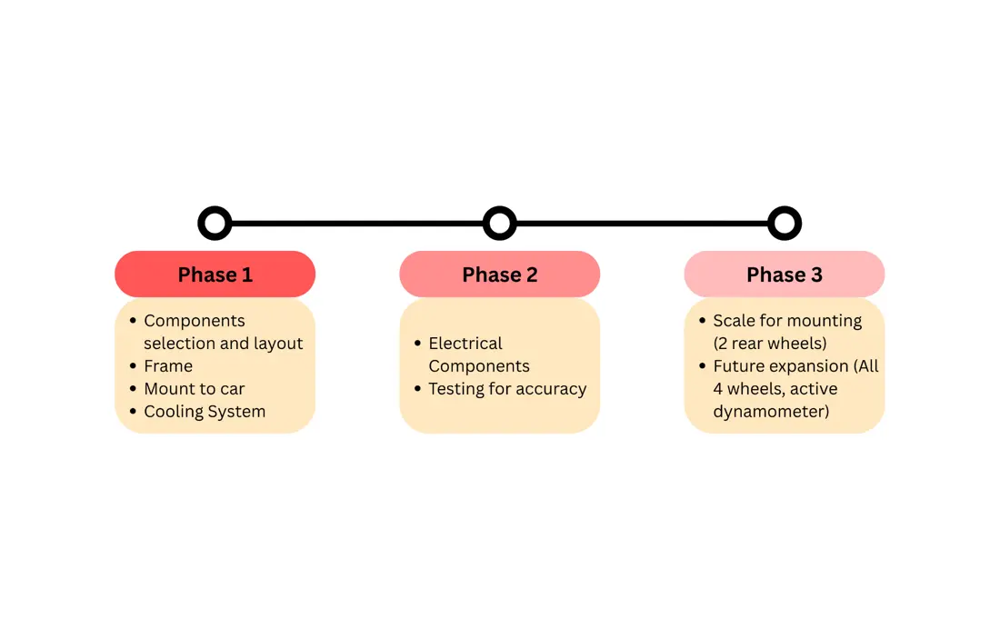
Figure X: Previous Year’s Cooling Assembly
For our project, we will be building upon the previous work to redesign the dynamometer’s components, layout, and frame with consideration of the vehicle's actual operating conditions, while also working on the second phase to further develop the cooling and electrical systems to achieve a more complete and functional dynamometer.
The next phase of the project will include scaling up the dynamometer to an active dynamometer that will enable more advanced and scenario-based testing for FSAE’s car development, and to be mounted to the two rear wheels of the car, or even to all four wheels when the NUS FSAE team scales up to a four-wheel drive vehicle.
1.6 Project Objective
The objective of this project is to design and develop a functional dynamometer capable of applying a safe and fixed load to the FSAE race car to evaluate its performance output, while maintaining a compact design suitable for the limited space available in the FSAE workshop. This includes ensuring the dynamometer can accommodate a range of vehicle torque and speed, and having a functional electrical system that allows the dynamometer to be loaded.
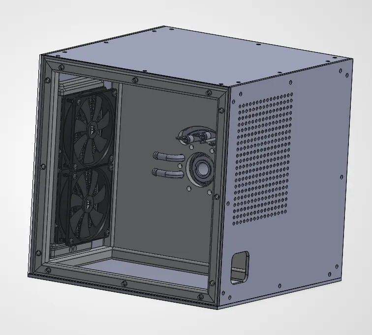
2. Design Requirements
2.1 Overall System
Figure ?: Functional Diagram of Dynamometer
Based on data from the FSAE team’s previous vehicles, the team operates with a final drive gear ratio ranging from the minimum of 3:1 to maximum of 4:1, stepping down the speed from their EMRAX traction motor to the wheels. Although the FSAE team currently imposes operating limits on the EMRAX motor, the dynamometer will be designed based on the peak capability of the EMRAX motor rather than the team's current operating limit. This provides a factor of safety to the design and ensures that the dynamometer is not restricted to the team's present configuration. Therefore, the dynamometer must be capable of accommodating the range of torque and rotational speed at the wheel hub resulting from these different gear ratios.
𝐸𝑚𝑟𝑎𝑥 𝑃𝑒𝑎𝑘 𝑅𝑃𝑀 = 6500𝑅𝑃𝑀 𝐸𝑚𝑟𝑎𝑥 𝑃𝑒𝑎𝑘 𝑇𝑜𝑟𝑞𝑢𝑒 = 220𝑁𝑚
6500
𝑀𝑎𝑥 𝑅𝑃𝑀 𝑡𝑜 𝑡ℎ𝑒 ℎ𝑢𝑏 (3: 1) = 3
≃ 2167𝑅𝑃𝑀
220×4
𝑀𝑎𝑥 𝑇𝑜𝑟𝑞𝑢𝑒 𝑝𝑒𝑟 ℎ𝑢𝑏 (4: 1) = 2
= 440𝑁𝑚Hence, as seen in figure ?, the mechanical power that is first translated from the car wheel to the dynamometer will be a maximum torque of approximately 440 Nm for a 4:1 ratio and a maximum speed of approximately 2167 rpm for a 3:1 ratio. The dynamometer then applies a controlled resistance on the car, and the heat and energy generated during this process will be handled by another system. A structural support system will also be required to hold all the components within the dynamometer.
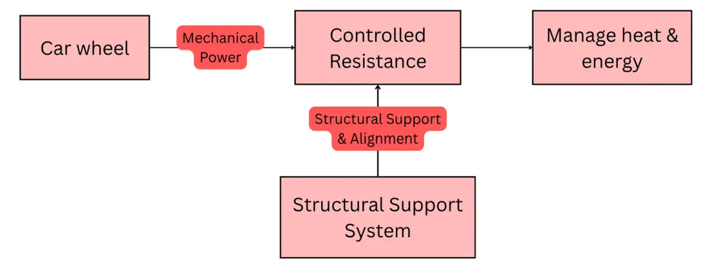
2.2 Design Criteria
Based on the needs of the NUS FSAE team and constraints of the dynamometer system, we came with a list of criteria to evaluate the effectiveness of the concepts:
1. Able to withstand hub torque of 440 Nm
2. Able to withstand hub speed of 2167 RPM
3. Able to withstand operating duration of 15 minutes per week
4. Compact and Portable
- Smaller than 50cm (L) x 50cm (W)
- Due to limited space available within FSAE workshop
5. Minimal setup complexity
- Straightforward rigging and disassembly
- Easy to set up for testing and break down for storage
6. Easy access for maintenance
7. Ensure modularity for future expansion
- Perform more advanced testing without complete redesign of system3. Concept development
3.1 Dynamometer Types
There are mainly two types of dynamometers, namely the chassis dynamometers and hub dynamometers.
A chassis dynamometer operates similarly to a treadmill, where the vehicle is positioned on rollers that rotate with its wheels. However, this configuration requires a large working area and is generally installed in a fixed location, limiting its portability.
Figure X: Chassis dynamometer.
In contrast, a hub dynamometer connects directly to the vehicle's wheel hubs, typically consisting of two or four individual dynamometer units. This configuration offers a more compact and portable design, allowing the dynamometer to be moved and stored when not in use.
Figure X: Hub dynamometer.
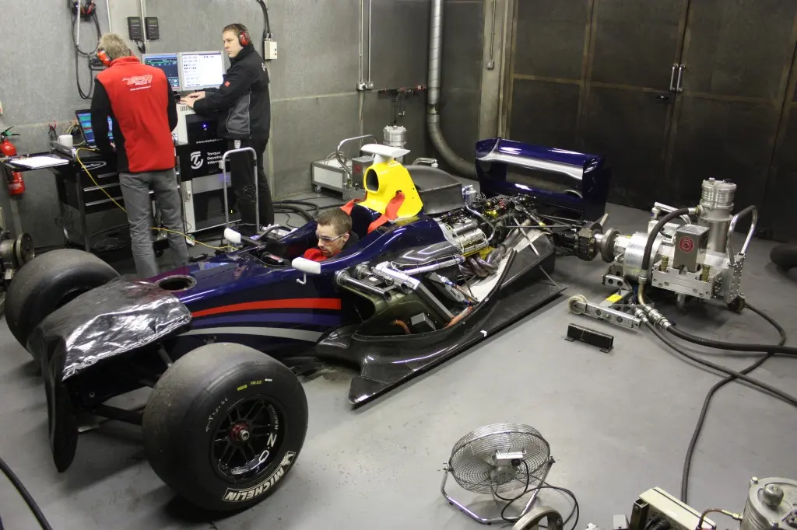
Therefore, due to the limited space available in the FSAE workshop, only the hub dynamometer configuration will be considered for this project.
3.1.1 Passive vs Active Hub Dynamometers
Having selected the hub dynamometer configuration, the next consideration is its operating principle. Dynamometers can be further classified into two categories: passive and active dynamometers. The main difference between them lies in their ability to absorb mechanical power from the vehicle or supply mechanical power to drive the vehicle.
The long-term objective of the project is to develop an active electrical dynamometer, as this would enable more advanced and scenario-based testing for FSAE’s car development. However, within the current project scope, time and budget constraints make the implementation of a fully active dynamometer less feasible. Therefore, a passive electrical dynamometer was selected as the most suitable solution.
Compared to the hydraulic and mechanical alternatives, the passive electrical dynamometer provides a compact design with relatively simple control and electrical requirements, which is important as the dynamometer will be stored and operated within the FSAE laboratory where space is limited. More importantly, our selection of this dynamometer provides a foundation for future conversion into an active dynamometer by incorporating the necessary power electronics and control. This allows our current project to focus on establishing a functional and reliable passive dynamometer without limiting its future development.
Passive Dynamometers
Type WHAT THEY DOO Advantages Disadvantages
Hydraulic dyno A hydraulic -High power -Poor low speed
dynamometer, commonly absorption loading capability as
known as a liquid brake capability braking torque
dynamometer. The -Relatively simple decreases with rpm.
medium usually used is and robust (T =KND)
oil or water. It is a passive construction -Breaking resistance
dynamometer that uses -Lower cost than is not as precise
fluid resistance to apply a electrical -Passive dyno where
braking load to the dynamometer it can only absorb
device under test. A -Liquid is used as a power
rotating rotor causes braking medium
water inside the and heat
dynamometer to dissipation
circulate, creating medium
resistance that opposes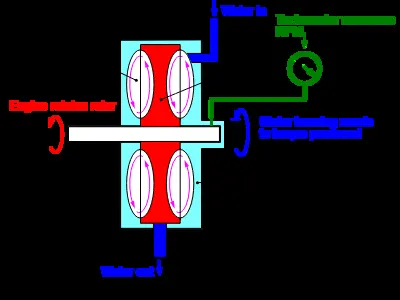
the rotation. The
absorbed mechanical
energy is converted into
heat and carried away by
the water. The braking
load can be controlled by
regulating the water flow
or quantity within the
dynamometer.Typically used to test
with Internal Combustion
Engine (ICE)Mechanical Friction A mechanical - Very simple - Wear and tear
Dynamometer dynamometer, or friction design and is more
dynamometer, is a working prominent due
passive dynamometer principle to high friction
that applies a braking - Low cost - Large amount
load by using mechanical - Resistive load of heat is
friction. A rotating disc or can be easily generated due
drum is connected to the adjusted to friction,
motor under test and - Can generate large cooling
brake pads would be resistive capability
applied to create the torque at any needed
resistive load. The speeds - Passive dyno
mechanical power where it can
absorbed is converted only absorb
into heat through power
friction. Torque can be - Friction and
determined from the wear can cause
braking reaction force, variation in
while power is calculated load
from the measured characteristics
torque and rotational over time
speed.Electrical A passive electrical - Simpler - Large load
Dynamometer dynamometer uses an electrical/ banks required
electrical motor control than - Large amount
operating as a generator the active of cooling
to provide a load to the Dyno required for
motor under test. As the - Energy could power resistors
motor drives the be conserved - Braking torque
generator, mechanical - Energy can is fixed based
energy is converted into be dissipated on electrical
electrical energy and easily load.when connected to a through
resistive load bank, power
current flows through the resistor
generator, producing an - No frictional
electromagnetic torque brake wear
that opposes its rotation - Relatively
following Lenz Law and simple
therefore it induces the control and
braking torque. electronics
- More
compact than
mechanical
and hydraulic
typeActive Dynometer
Electrical An active electrical - Precise - Higher cost
Dynamometer dynamometer uses a torque and - More complex
motor that is powered to speed control control and
apply a precise load to - Allow power
the motor under test. dynamic electronics
The dynamometer can environment
produce an opposing testing
torque that can be - Able to
controlled with 2 regenerate
different modes, namely, energy
torque-control mode and - No frictional
speed-control mode break wear
allowing the load to be
varied electronically. This
allows various testing
conditions to be carried
out.Table X: Comparison of dynanometer.
3.2 Type of Motor
The selection of a suitable dynamometer motor depends on several factors, including torque capacity, rotational speed, efficiency, and cost. Table ………. presents a comparison of different motor options based on their operating characteristics, advantages, and limitations.
Type Operating Principle Advantages Disadvantages

Three Phase AC Electric Converts electrical • Robust and reliable • Requires compatible
Induction Motor energy into mechanical • Low maintenance inverter
rotation. Can operate • Widely available • Additional integration
as a generator to complexity
absorb mechanical • Potentially larger and
power during heavier
dynamometer testing.Baoluo XYQ-8PC01 Forklift traction motor • Compact design • Limited rated power
designed for • Designed for high (8 kW)
high-torque, low-speed starting torque • Requires compatible
operation. Can • Suitable for controller
potentially be used as a heavy-duty applications • May not meet
dynamometer load required speed range
with a suitable
controller.EMRAX 228 High-performance • High torque and • Requires a
axial-flux permanent power density compatible inverter
magnet synchronous • Compact and • Requires effective
motor (PMSM), capable lightweight cooling
of operating as both a • High efficiency
motor and generator. • Already available for
the project
• Compatible with
existing designTable X: Comparison of motor.
The EMRAX 228 was selected as the dynamometer motor due to its compatibility with the FSAE vehicle's existing EMRAX traction motor. Its torque and rotational speed characteristics make it suitable for the intended testing conditions, particularly since the FSAE team does not operate its traction motor at full rated capacity. Furthermore, the EMRAX 228 can operate as both a motor and generator, supporting the current passive dynamometer design and potential future conversion to an active dynamometer. The availability of spare EMRAX motors within the FSAE team also reduces procurement costs and promotes component reuse.
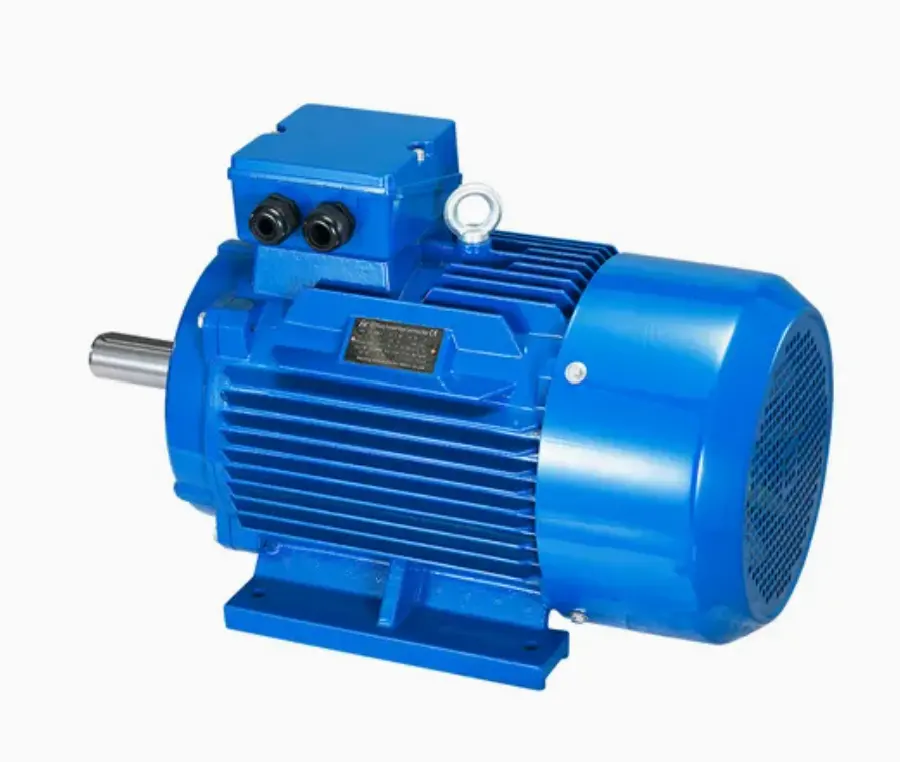
3.3 Power Dissipation
As the passive electric motor concept was selected for the dynamometer, several methods can be considered to manage and dissipate the electrical energy generated by the dynamometer motor during operation.
Concepts What they do Advantages Disadvantage
Power Resistor The electrical energy - Simplicity - Energy
generated by the - Cheap wastage
dynamometer motor is - Ease of - Cooling
converted into heat and maintenance system
dissipated through a required to
suitably rated power dissipate
resistor. heat.Regenerative Power The electrical energy - Recover - High initial
generated by the generated cost
dynamometer motor will electricity - More
undergo the required for use and complex
power conversion before sale components
being used to power - Reduce net required to
electrical loads, with excess electricity process
power returned to the consumption electricity
power grid. - No battery before usage
storage and gird
required - Requires
Singapore’s
authority and
tedious
process to
return to
national gridPower bank The energy generated by - Stores - High initial
the dyno motor will be recovered cost
stored in a suitably sized energy for - Require
battery after rectification later usage battery
and voltage regulation. - Does not management
require system
complex grid - Battery
converters degradation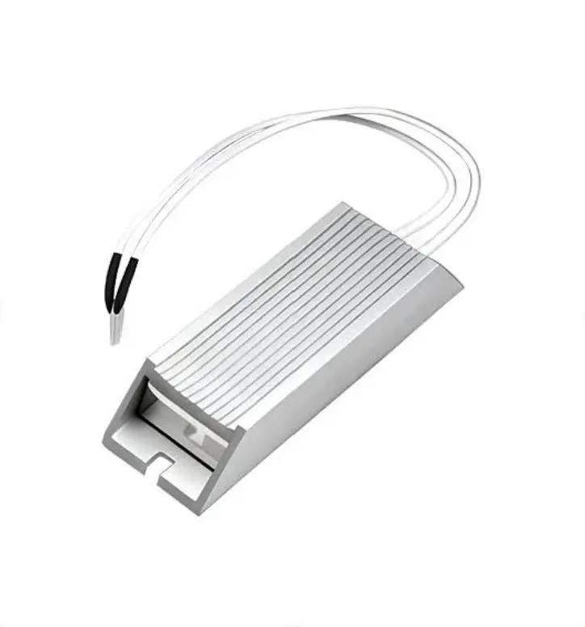
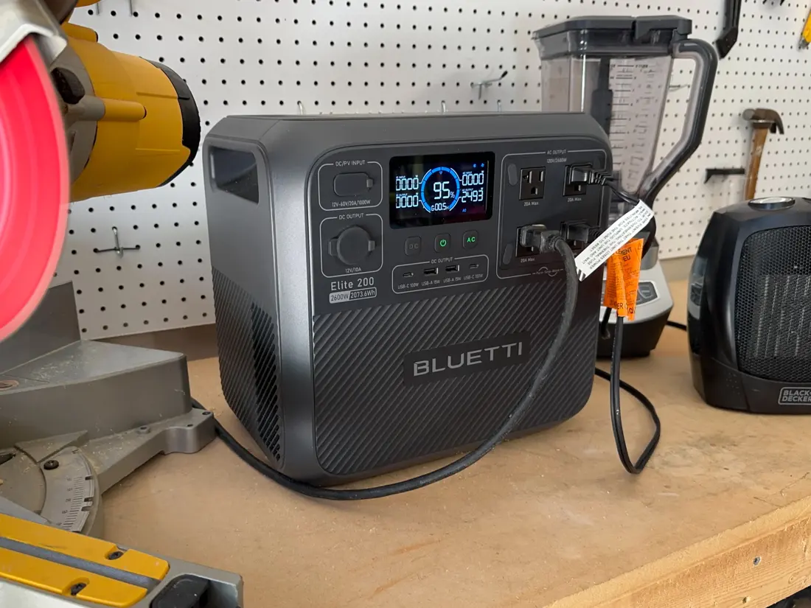
Table X: Comparison of Power Dissipation Method.
The power resistor concept was selected due to its simplicity and lower initial cost. Although regenerative and battery storage systems can recover the generated energy, additional power conversion and storage equipment are required, increasing system complexity and cost. Due to the short and infrequent operation of the dynamometer, the electricity savings are insufficient to justify these additional costs. The detailed cost and payback period analysis is provided in Appendix XXX.
3.4 Frame Enclosure
Concepts Construction Advantages Disadvantage
Truss Frame Constructed using - High Strength-Weight - Requires
interconnected ratio multiple joint
hollow structural - Lesser material usage connections
members to form a - Lesser material cost - Joint strength
rigid framework. - Allow easy access to depends on the
components inside joining method.Metal Plate Frame Constructed using - Good structural - Expensive due
metal plates joined rigidity to amount of
together to form a - Provides protection material
rigid, enclosed for components inside - Heavy due to
structure. - Allow ample space for amount of
components material
mounting - Limited
accessibility to
install or
maintain
componentsT-Slot Frame Constructed using - Easy assembly and - Joint rigidity
modular aluminium disassembly depends on
extrusion profiles - High modularity fasteners
connected by - Cheap - Lower
brackets and structural
rigidity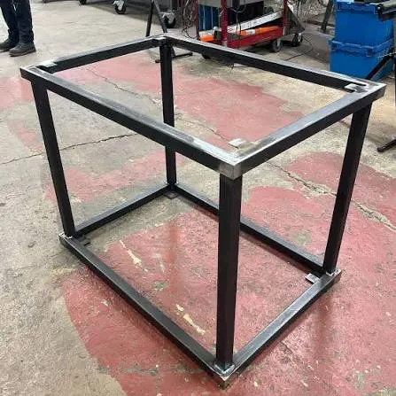
fasteners. - Loosen under
vibrationsTable X: Comparison of enclosure type.
Based on our design criteria, the truss-type frame was selected due to its high strength-to-weight ratio and structural rigidity, which are essential for withstanding the maximum operating torque and vibrations experienced during dynamometer operation. Its lightweight construction also improves portability, while the open-frame design allows easy access to components for maintenance and future upgrades. Furthermore, its efficient use of materials helps minimise fabrication costs, making it a suitable choice within our project budget.
3.5 Frame Joining Concept
The dynamometer frame must carry the structural and cyclic loads of the test setup while remaining easy to transport and manufacture. Two decisions follow from this: the frame material and the method used to join it.
3.5.1 Frame Design Considerations
Based on our design criteria for the dynamometer, we further specified the frame’s design consideration:
Criteria Explanation
Structural Strength The frame must carry operating loads without excessive deflection.
Mass The frame must be easy to transport.
Dimensional Ability to maintain frame geometry and alignment during and after joining. Accuracy
Manufacturability Ease of manufacturing and assembly.
Cost Fabrication cost should be low.
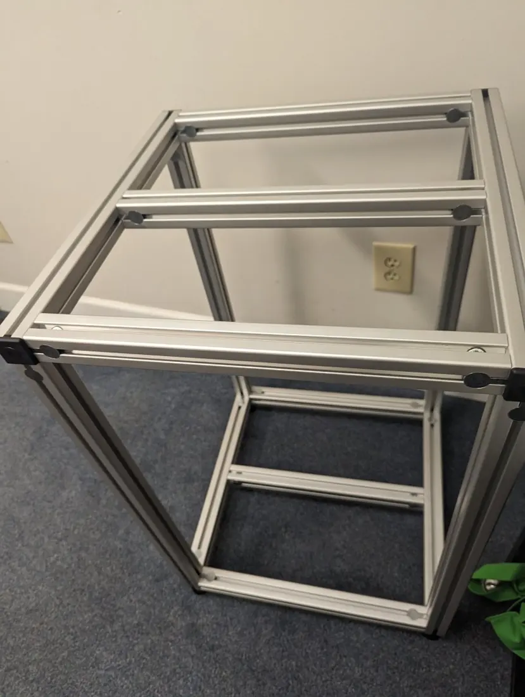
Table X: Comparison of enclosure type.
3.5.2 Frame Joining Methods
The previous year’s frame was constructed from welded steel and weighed approximately 40 kg, making it difficult to transport. As welding is restricted at NUS, fabrication had to be outsourced, resulting in higher costs and longer lead times. Furthermore, their frame experienced warping during fabrication and had to be sent back for rework, further delaying the project. Considering these limitations, a lighter aluminium frame joined through adhesive bonding was proposed as a more convincing alternative.
Welded Steel Frame
Welding provides strong, rigid, and reliable joints, making it a well-established method for structural applications. However, welding introduces heat-affected zones (HAZ), which may alter the overall dimensions and material properties near the joints. Furthermore, welding restrictions at NUS require fabrication to be outsourced, resulting in higher costs and longer lead times. Combined with the substantial weight of the previous frame design, these limitations made welded steel less suitable for the project.
Bonded Aluminum Frame
Adhesive bonding offers a lightweight alternative without introducing heat distortion or heat-affected zones. An example, the Lotus Elise employs epoxy-riveted bonding to join extruded aluminium sections in its chassis, demonstrating its feasibility in automotive structural applications. Similarly, the dynamometer frame must withstand structural and cyclic loads during operation. Therefore, epoxy bonding supplemented with rivets was proposed, with static shear and fatigue testing planned to verify joint reliability.
A weighted decision matrix was therefore developed to evaluate both joining methods across 5 different criterias, as shown in Table ……...
Criteria Weight Welded Steel Frame Bonded Aluminium Frame
Structural Strength 30% 5 3
Mass 20% 2 5
Dimensional Accuracy 10% 3 4
Manufacturability 15% 2 5
Cost 15% 2 5
Total Weighted Score 100% 69 79
Scores: 1 = Poor, 2 = Below Average, 3 = Moderate, 4 = Good, 5 = Excellent. Weighted totals are normalised to 100.
Table X: Comparison of enclosure type.
Based on the evaluation, epoxy-riveted bonding was selected as the proposed joining method. To verify its suitability for dynamometer operation, two epoxy adhesives, 3M DP490 and EPICOTE 3175, will be evaluated through static shear and fatigue testing to assess their load-carrying capacity and resistance to cyclic loading.
3.6 Power Transmission Concepts
The previous design did not account for the FSAE EV’s gear reduction, which increases the torque delivered to the wheel hub beyond the EMRAX 228's peak input torque of 220Nm. Therefore, a power transmission system is required to reduce the torque transmitted to the motor.
3.6.1 Power Transmission System Design Criteria
Criteria Explanation
Load Capacity Ability to transmit high torque and withstand sudden load fluctuations
during dynamometer testing.Reliability Ability to maintain consistent power transmission and a stable speed ratio
without slipping or unexpected failure.Durability Ability to withstand repeated loading and prolonged operation while
minimising wear, fatigue and component deterioration.Manufacturability Ease of fabrication, assembly and integration into the existing
dynamometer structure.Compactness Minimise space requirements and avoid interference with surrounding
dynamometer components.3.6.2 Types of Power Transmission Systems
Types of gear systems What do they do? Advantage Disadvantages
Fixed-Axis Gear Drive A fixed-axis gear drive - Capacity to - Requires precise gear
transmits mechanical transmit high alignment and
power between shafts torque. positioning.
through direct - No slippage, - High costs as systemTypes of gear systems What do they do? Advantage Disadvantages
engagement of gear ensuring a requires multiple
teeth. Different gear constant velocity gears, mounts and
sizes allow the ratio. casing
transmission to - High transmission - Difficult to
increase or decrease efficiency. accommodate
rotational speed and - Compact design, changes in shaft
torque. small centre centre distance.
distance. - Requires lubrication
- High durability and to minimise wear.
reliability with - Gear meshing may
proper lubrication. generate noise and
vibration.Belt drive A belt drive is a - Affordable due to - Belt slippage can
frictional drive that low component vary the velocity
transmits power cost and high ratio
between shafts using efficiency - They apply a heavy
pulleys and an elastic - They can transmit load on the bearings
belt. power over long and shafts
distances, contrary - Finite speed range
to gears, couplings - Short service life if
and lead screws not maintained well
- Compared to chain - They need an idler
drives, they pulley or some
operate more adjustment of center
smoothly and distance to
more quietly compensate for belt
- They can absorb stretching and wear
shock and - Usually used to
vibrations reduce speed instead
- Overload
protection
through the
slipping of the belt
- Lightweight and
relatively durable
- Low maintenance
costsChain drive Chain drive is one way - They are compact - Requires precise
of transferring speed and have small alignment compared
and mechanical power overall dimensions to belt drives
from one shaft to - They have very - Chain drive require
another, widely used in high efficiency (up frequent lubrication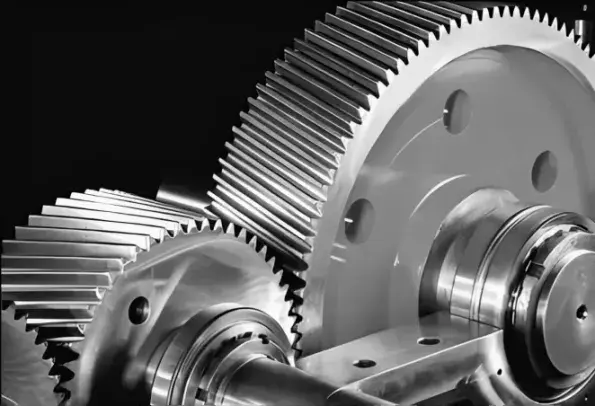
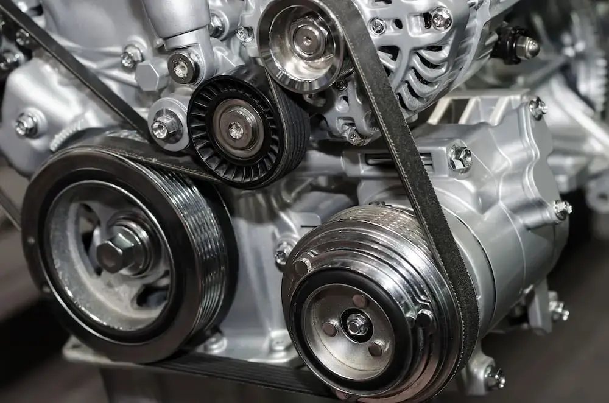
Types of gear systems What do they do? Advantage Disadvantages
bicycles and to 96%) - Load capacity less
motorcycles. It consists - No slip and creep compared with gear
of gear sprockets and during the power drives
roller chains, with the transmission, - Conventional chain
teeth of the gear ensure the perfect drive suffers
meshing with the holes velocity ratio. vibrations due to the
in the links of the - The chain drive is chordal effect.
chain, which transfers easy to install. - The chain drive
mechanical force in the needs accurate and
system when they careful mounting.
move together. - They require a
tensioning device for
adjustments to
counter slack.Table X: Comparison of Power Transmission Types.
A weighted decision matrix was therefore developed to evaluate both joining methods across 5 different criterias, as shown in Table ……...
Criteria Weight Fixed-Axis Gear Belt Drive Chain Drive
DriveLoad Capacity 30% 5 3 4
Reliability 25% 5 3 4
Durability 20% 2 4 5
Manufacturability 15% 2 4 4
Compactness 10% 4 3 4
Total Weighted 100% 3.85 3.35 4.2
ScoreScores: 1 = Poor, 2 = Below Average, 3 = Moderate, 4 = Good, 5 = Excellent.
Table.. : Weighted Decision Matrix of Power Transmission Systems Based on the weighted decision matrix, the chain drive achieved the highest score. Although belt drives are relatively affordable and easy to maintain, conventional friction belt drives are susceptible to slippage under high loads, which may affect the consistency of the transmission ratio. In comparison,
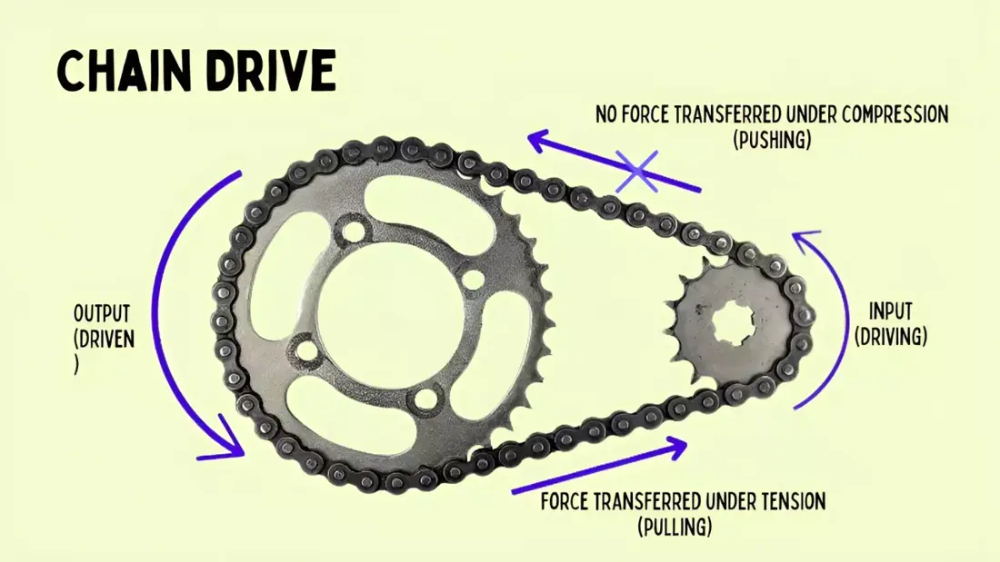
fixed-axis gear drives offer high load capacity and reliable power transmission, but are more costly and complex to manufacture.
The chain drive was therefore selected as it offers high transmission efficiency, reliable power transmission without slippage, and flexibility in achieving the required gear ratio. Furthermore, its components are readily available commercially, making it a more cost-effective and practical solution. Although chain drives require proper alignment, lubrication, and tensioning, these limitations can be addressed through appropriate design and maintenance.
3.7 Tensioner Concept
The chain tensioning mechanism plays an important role in ensuring reliable power transmission between the FSAE vehicle and the dynamometer motor. Proper chain tension is necessary to prevent chain derailment, excessive wear, and vibration during operation. Therefore, different tensioning concepts were evaluated to identify a suitable mechanism for the dynamometer.
3.7.1 Tensioner Design Criteria
Based on our design criteria for the dynamometer, we further specified the frame’s design criteria:
Criteria Explanation
Load Capacity Ability to withstand high chain forces and sudden torque fluctuations
during dynamometer testingReliability Ability to maintain chain tension consistently without failure, loosening or
excessive wearDurability Ability to withstand repeated loading and prolonged operation while
minimising wear, fatigue and component deterioration.Manufacturability Ease of fabrication, assembly, and integration into the existing
dynamometer structureCompactness Minimise space requirements and avoid interference with surrounding
components3.7.2 Types of tensioner
Types of tensioner What do they do? Advantage Disadvantages
Manual Take-up/Screw The mechanism uses a -Simple and Robust -Requires periodic
Tensioner threaded lead screw to design manual adjustment
manually reposition the -Low cost -IncorrectTypes of tensioner What do they do? Advantage Disadvantages
bearing housing, thereby -Suitable for high adjustment can
changing the centre speed and high load cause over- or
distance between the applications under-tensioning
sprockets. This type of -Requires
tensioners are commonly mechanism for
found on motorcycles. bearing housing
Figure ? Screw Type movement
TensionerFloating Idle/Roll Ring Roll ring uses one or more -Main shafts and -Additional wear
free-moving idler sprockets bearings remain and friction
that engage with the chain fixed, hence very -Not suitable for
to remove excess slack. The simple design high speed and
idlers can be positioned -Relatively simple to high load
according to the chain install application
condition, helping maintain -Takes up chain slack -Not able to
adequate chain tension without changing withstand whiplash
without changing the shaft centre from sudden
centre distance between distance torque
the driving and driven -Low cost
sprockets. This type of
Figure ? Floating Idle tensioner is commonly
and Roll Ring Tensioner found in food processing
equipment.Spring Tensioner A spring-loaded chain -Automatically -Expensive
tensioner uses compensates for -More complex than
compression springs to chain elongation manual adjustment
apply a continuous force to -Maintains tension -Spring force must
the bearing housing, without adjustment be correctly
allowing the shaft and - Can absorb small selected
sprocket position to variations and -Bearing/shaft
automatically adjust. This dynamic chain position can move
maintains the required movement during operation
chain tension and -Less rigid than a
compensates for chain fixed/manual
elongation during bearing
operation, reducing the arrangement
need for frequent manual
Figure ? Spring loaded adjustment.
TensionerTable X: Comparison of Tensioner Types.

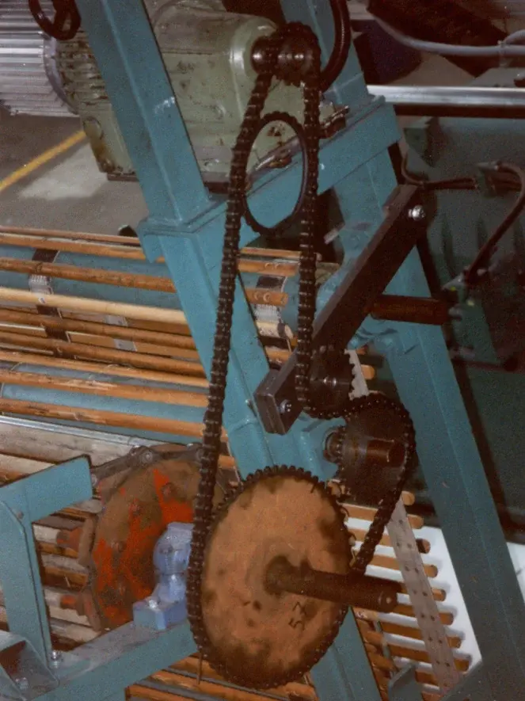
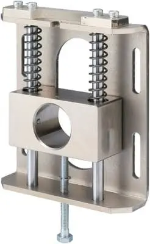
A weighted decision matrix was therefore developed to evaluate both joining methods across 5 different criterias, as shown in Table ……...
Criteria Weight Floating Idle/Roll ring Spring Tensioner Manual Take-up/
Screw TensionerLoad Capacity 30% 2 3 5
Reliability 25% 3 5 4
Durability 20% 2 3 5
Manufacturability 15% 5 2 4
Compactness 10% 3 4 4
Total Weighted Score 100% 2.8 3.45 4.5
Scores: 1 = Poor, 2 = Below Average, 3 = Moderate, 4 = Good, 5 = Excellent.
Table.. : Weighted Decision Matrix of Tensioners
Based on the weighted decision matrix, the manual take-up/screw tensioner achieved the highest score. The manual take-up tensioner was selected due to its high rigidity, load capacity, and simple design, making it suitable for the high torque and speed requirements of the dynamometer.
Although the spring tensioner automatically compensates for chain elongation, it introduces additional complexity and allows shaft movement during operation, which may affect transmission stability. Whereas, the floating idler may be susceptible to chain whip under sudden load fluctuations, making it less suitable for high-load applications. While the manual take-up tensioner requires periodic adjustment, this can be addressed by providing an easily accessible adjustment mechanism. Therefore, the manual take-up/screw tensioner was considered the most suitable option for the dynamometer.
3.8 Overall System Diagram
The dynamometer can be split into two overall systems, the mechanical assembly and the electrical assembly. As illustrated in Figure X, mechanical power from the wheel hub is transmitted to the dynamometer through a gearing system that reduces torque and increases rotational speed to match the operating specifications of the dynamometer motor. The dynamometer’s motor will then operate as a generator, converting the mechanical power into AC electrical power, which is subsequently converted into DC electrical power through a rectifier. The generated electrical energy will then be dissipated through a suitable power dissipation system within the electrical assembly. Additionally, cooling systems
will be required for both the mechanical and electrical assemblies to manage heat generated during operation.
4. Detail Design
4.1 Frame
Figure ?: Iteration 1 of frame
Our first design began with sketching out the overall layout of the components in the frame (Figure ?), which includes the chain drive, motor, shafts and a thick plate across that holds the components. However, we realised that mounting the EMRAX onto the wall of the frame significantly constrains the size of the frame and reduces the space available for the other components, hence we decided to mount the motor downwards instead. The motor mount we will be using is provided by the FSAE team as well, hence no extra manufacturing costs will be needed.
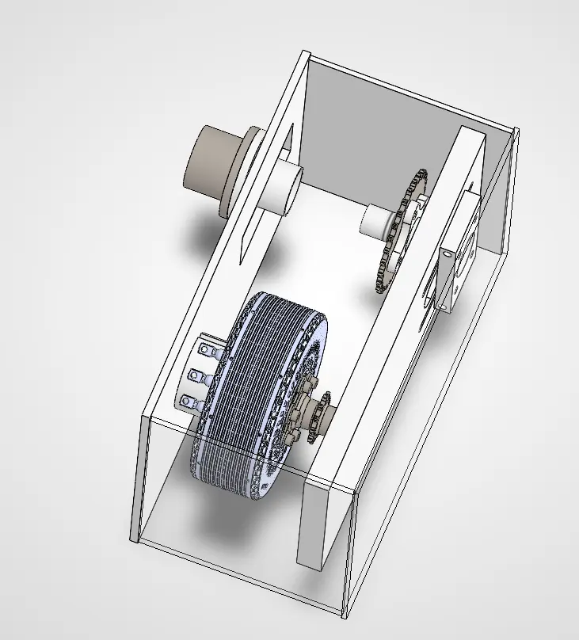
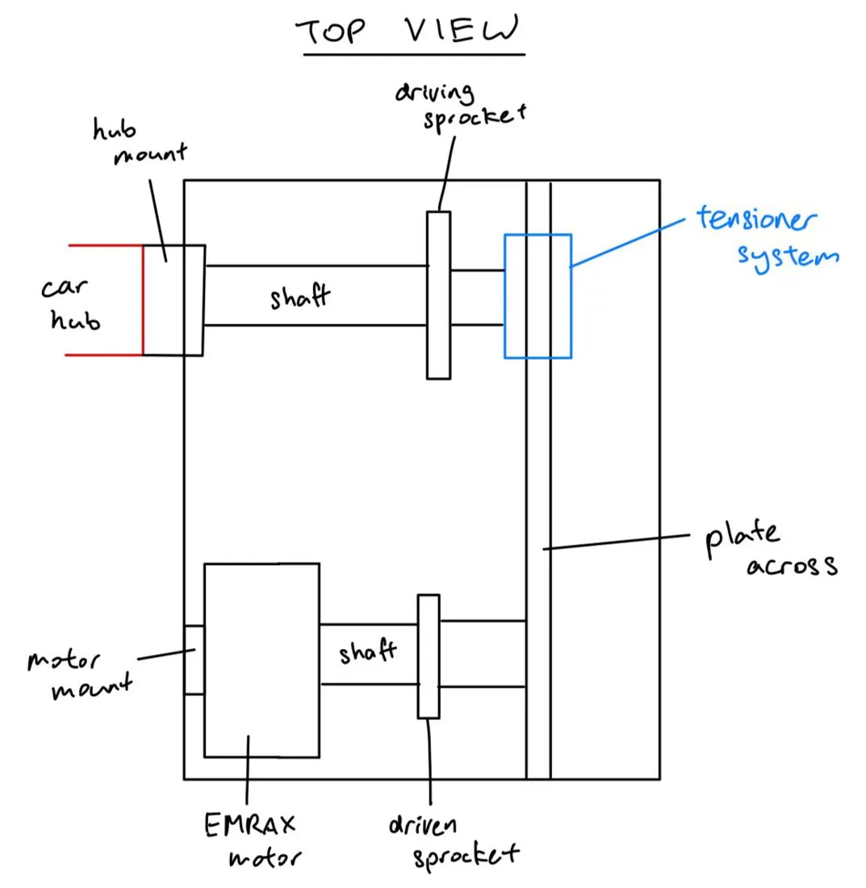
Figure ?: Iteration 2, swingarm changed to entire plate, motor mount down
For our second iteration, we used 6061-T6 Aluminium hollow beams with a cross section of 31.75mm x 31.75mm, and 1.98mm thick walls to form the overall frame truss structure, and 2 of the beams are solid beams for the tensioner system. From this design, we realised that the right part of the frame does not hold any components, hence could be removed in order to reduce the weight and make the design more compact.
Figure ?: Iteration 3, removed the right part
The final design can be seen in figure ?, where there are thin aluminium sheets to cover the frame up. The sheets are bolted onto the beams as it does not withstand high forces, and allows it to be easily removed to access the components in the frame for maintenance.
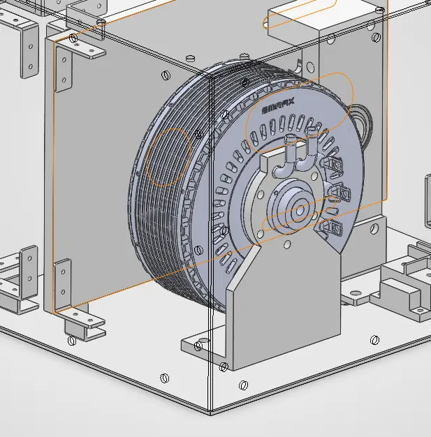
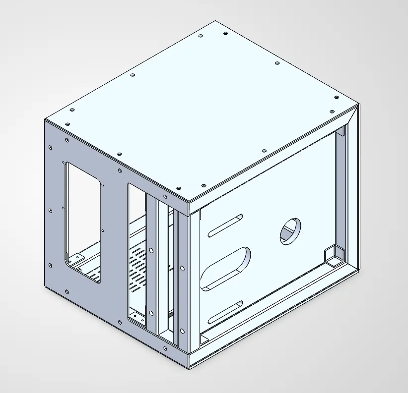
Figure ?: Reinforcement brackets
Since the frame is joined using epoxy, we added L brackets, corner brackets, and triangle brackets at the joints (Figure ?) to reinforce them by increasing the area bonded such that the shear strength of the joints is increased.
Figure ?: Adjustable leg with caster wheel
Additionally, based on the previous year’s design, we included 4 lockable caster wheels for portability and ease of set-up, while providing stability when locked during dyno runs. A small caster wheel dimension of 5cm was used to allow for the alignment of the motor and the vehicle’s wheel hub, as it is relatively low. The adjustable leg will allow the dynamometer to have height and tilt adjustments to ensure proper alignment of the dyno’s flange and the car’s wheel hub, accommodating both the car’s camber and the floor’s unevenness.
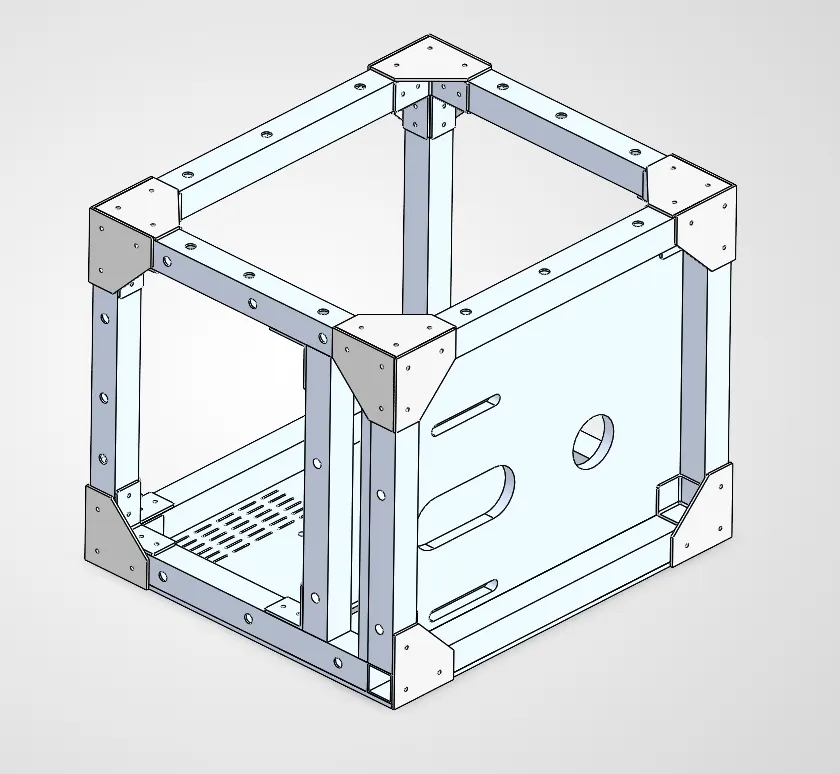
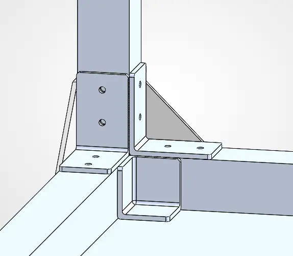
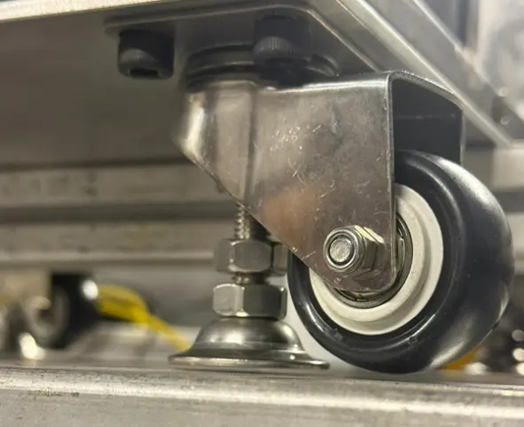
4.2 Tensioner
Figure ?: Iteration 1 of tensioner (right), inspo (left)
For the design of our tensioner, we took inspiration from common tensioners used in conveyor systems as seen in Figure ?. We incorporated this design into the thick plate in our frame (figure ?), where the screw to tension the chain drive is in the middle of the plate. However, this design would require rails in order for the tensioner to stay in place and not fall out, which requires a more complicated manufacturing and assembly. Furthermore, the screw being in the middle of the plate restricts access to it and makes tightening the tensioner difficult.
Figure ?: Iteration 2 of the tensioner on one side
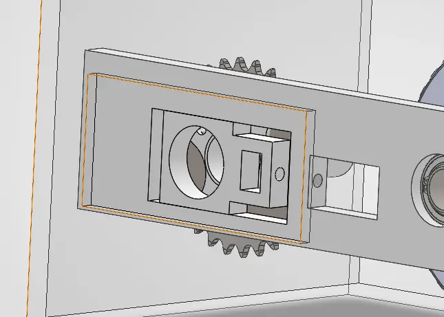
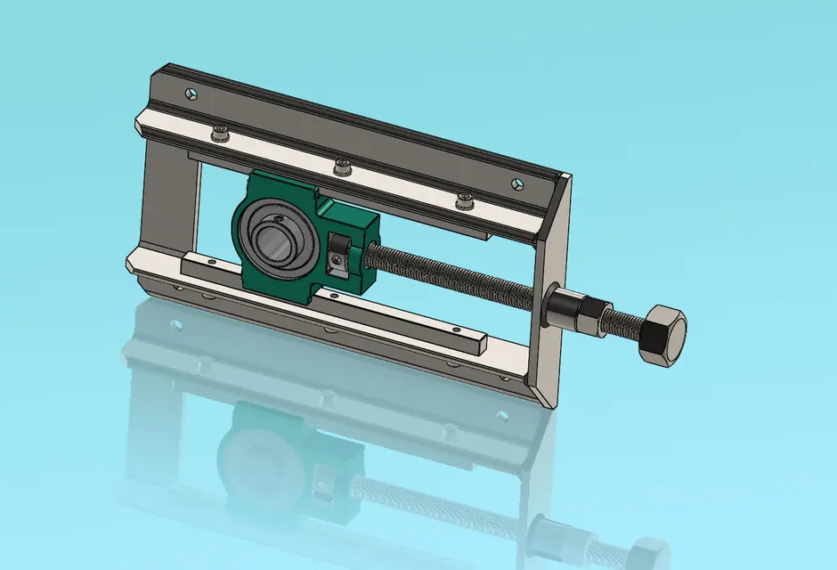
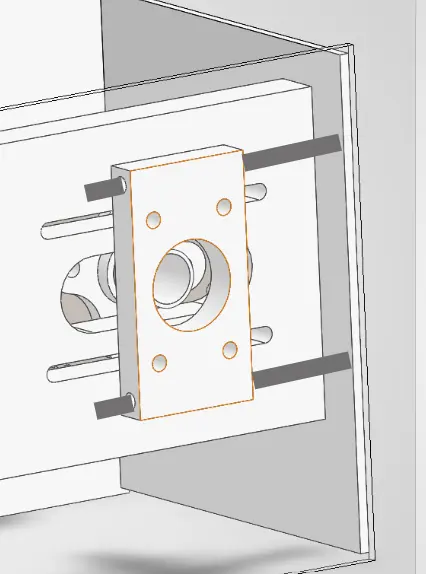
Hence, we changed our design to a tensioner block at the side of the thick plate (Figure ?). There are 4 holes on the tensioner, as well as 2 slots on the plate, such that screws can be used to hold the tensioner in place, replacing the rails in a way that is easier to manufacture and assemble. There are also 2 holes at the top and bottom of the tensioner for screws that are attached to the side of the frame, allowing the tensioner to be tightened from the outside of the frame. From this iteration, we then realised that having the tensioner on only one side of the chain drive might cause twisting and turning of the chain during operation due to the high load and speed.
Figure ?: Iteration 3, U-shaped tensioner with L bracket
Hence, we added a U-shaped tensioner to the other side of the chain drive (figure ?). The 4 holes on both tensioners are aligned with each other, such that screws can be used to hold them in place with the slots on the thick plate. An L bracket was also added to the bottom of the U-shape tensioner and the bottom plate of the frame, in order to provide extra support to the tensioner. Both tensioners have 2 holes at the top and bottom which attach to 2 solid beams on the frame for tensioning.
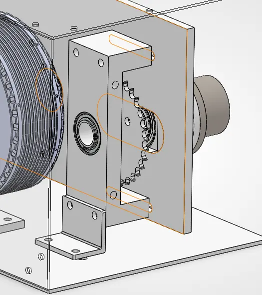
4.3 Flange and Shaft Design
Figure ?: Hub Mount
Based on last year’s design, we will be reusing the mount that they designed to connect the wheel hub to the dynamometer. As seen in figure ?, the mount consists of a step inside for the lock nut of the hub, and connects to the hub via dowel pins. The mount has a flange that will then connect to a custom flange and shaft that we designed, which will be able to hold all the components involved for the chain drive, consisting of the driving sprocket, sprocket bracket, and 4 bearings (Figure ?).
Figure ?: Top view of shaft with components
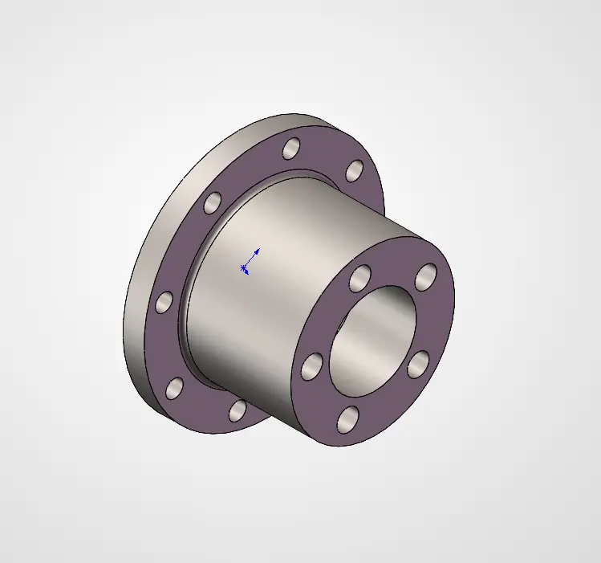
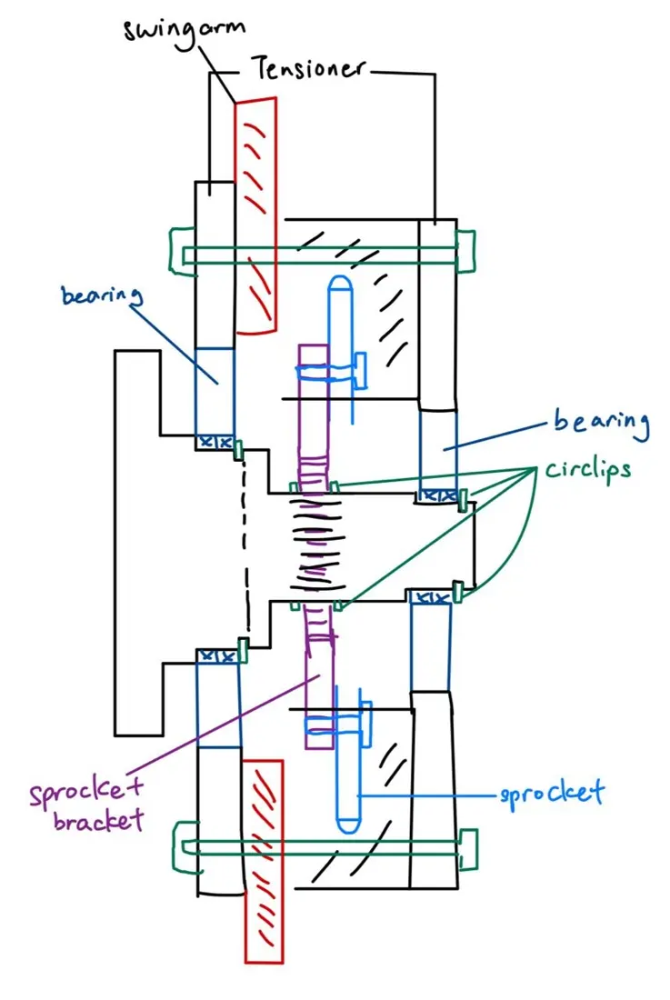
Figure ?: 3D Model of shaft (Left), Shaft with components (Right)
The shaft holds the 2 sets of bearings in the 2 tensioners respectively, and the splined part of the shaft holds the driving sprocket’s bracket (Figure ?). The sprocket is then attached to the bracket by bolts. The components are held in place either by the step on the shaft or circlips.
4.4 Chain-drive design
The two primary design considerations are the sprocket gear ratio, which determines the relationship between motor and wheel hub speeds, and the sprocket centre distance, which affects chain length and tensioning.
Figure : Chain-drive mechanism
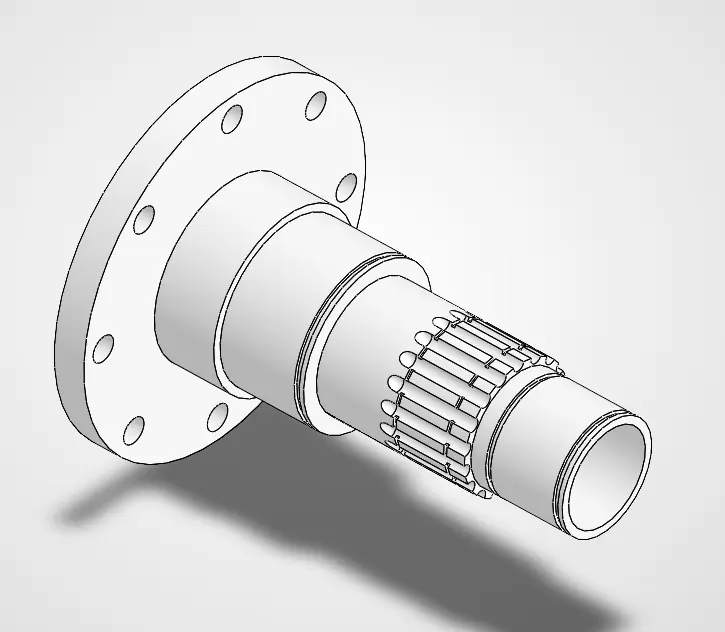
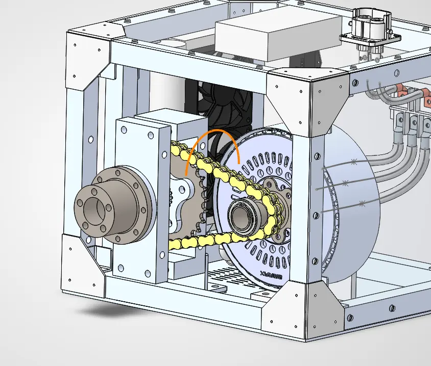
4.4.1 Gear Ratio
As the FSAE race car has a gear drive that ranges between 3 to 4 based on the year’s design, our dynamometer’s gear ratio has to be able to account for the maximum operating conditions of 440 Nm torque (car gear ratio of 1:4) or 2167 RPM speed (car gear ratio of 1:3) from the car.
Dyno’s Car’s gear Speed at EMRAX RPM Torque at EMRAX Torque Ratio ratio in dyno (RPM) Utilisation in dyno (Nm) Utilisation
2.00:1 1:4 3250 50.0% 220.0 100.0%
1:3 4333 66.7% 165.0 75.0%
2.25:1 1:4 3656 56.2% 195.6 88.9%
1:3 4875 75.0% 146.7 66.7%
2.50:1 1:4 4062 62.5% 176.0 80.0%
1:3 5417 83.3% 132.0 60.0%
2.75:1 1:4 4469 68.8% 160.0 72.7%
1:3 5958 91.7% 120.0 54.5%
3.00:1 1:4 4875 75.0% 146.7 66.7%
1:3 6500 100.0% 110.0 50.0%
Table ?: Comparison of different chain-drive ratiosHence, as seen in table ?, we compared the percentage utilisation of the maximum allowable input torque and speed for the EMRAX motor, and concluded that a gear ratio of 2.5:1 balances both torque and speed similarly.
For the small driving sprocket, we are using one that has 11 teeth, as the FSAE team has a custom 4340 steel 11 teeth sprocket that consists of the mount to the EMRAX motor and the shaft for the bearing as one piece. As it is the same sprocket used in the car, it will be strong enough for the dynamometer as well since the operating conditions are similar. Furthermore, this allows us to save costs on manufacturing a shaft and mount for the sprocket to the motor.
Hence, since the driving sprocket is 11 teeth, and we have chosen a gear ratio of 2.5:1, the driven sprocket would have to be 27.5 teeth. Since this is not possible, we rounded up to use a driven sprocket of 28 teeth, which leads to a gear ratio of 2.55:1.
4.4.2 Center distance
The sprocket centre distance was selected to achieve a compact chain-drive assembly while maintaining sufficient clearance between the sprockets.
A 520 roller chain with a pitch of 15.875 mm was selected, connecting the 28-tooth and 11-tooth sprockets.
Figure ?: Chain-drive configuration illustrating the sprocket centre distance.
Based on the sprocket dimensions, the theoretical minimum centre distance was calculated to be 112.7 mm. Using Renold's chain length and centre distance equations, a 42-pitch chain was selected to accommodate the assembly's structural constraints while maintaining adequate sprocket clearance.
The final calculated centre distance was 173.27 mm, providing a compact chain-drive layout. Detailed calculations are provided in Appendix B.
4.5 Bearing
Bearing selection is primarily determined by the operating conditions of the application, including the radial and axial loads acting on the bearing and its operating speed. These parameters influence the expected fatigue life of the bearing. For this project, the bearing life requirement was determined by using the internal bearings of the EMRAX 228 motor as a benchmark. The dynamometer bearings are selected to achieve an equivalent or greater theoretical bearing life under the specified operating conditions. This ensures that bearing failure within the dynamometer is not expected to occur before failure of the EMRAX motor bearings, thereby reducing the likelihood of premature bearing failure within our system. Hence, the NSK 6907V and NSK 6910VVCM bearings were selected. The corresponding bearing life calculations are provided in Appendix AAA. An additional consideration in the selection of these bearings was that it is already available to us from the FSAE team thus, cost can be omitted from the project budget, while still satisfying the required performance criteria.

4.6 EMRAX Cooling
The EMRAX 228 offers three cooling configurations: air-cooled (AC), liquid-cooled (LC), and combined-cooled (CC). For liquid cooling, the manufacturer specifies a minimum coolant flow rate of 6 L/min and a maximum coolant temperature of 50°C, forming the primary cooling system design constraints.
Liquid cooling was selected for its effective heat dissipation, compactness, and lower complexity compared to combined cooling. This approach also aligns with the FSAE team's previous experience operating the EMRAX 228 under racing conditions.
The proposed cooling system consists of a 240 mm radiator, dual cooling fans, a coolant reservoir, and a circulation pump, integrated into a compact assembly.
The cooling circuit is configured as:
Figure X: EMRAX 228 liquid cooling circuit
Pump → Radiator → EMRAX 228 → Reservoir → Pump
As illustrated in Figure X, coolant from the pump first passes through the radiator before entering the EMRAX 228, where it absorbs heat generated during motor operation. The heated coolant then flows
into the reservoir before returning to the pump, completing the closed-loop cooling circuit. The reservoir is positioned above and directly upstream of the pump to maintain a continuous coolant supply at the pump inlet.
An EBP40 circulation pump was selected for its maximum flow rate of approximately 35 L/min, exceeding the EMRAX 228's minimum requirement of 6 L/min. A 240 mm radiator, similar to that used by the NUS FSAE EV team, was also selected based on its previous application in cooling the EMRAX 228.
Cooling component specifications are provided in Appendix D.
4.7 Power Resistor Dissipation
The dynamometer system operates with a DC bus voltage of 400 V and a total power dissipation requirement of 80 kW, which gives rise to an equivalent 2Ω requirement. With two dynamometers, each unit is required to dissipate up to 40 kW, with an equivalent resistance of 1 Ω.
To satisfy these requirements, 50 Ω power resistors rated at 1000 W each were selected. For each dynamometer, 50 resistors are connected in parallel to achieve an equivalent resistance of 1 Ω and a combined rated power dissipation capacity of 50 kW. This provides an additional 10 kW of rated capacity, to accommodate potential load fluctuations.
Resistor Cooling System Design
As the electrical energy is converted into heat, an effective cooling system is required to prevent the resistors from overheating. Two design iterations were developed to explore suitable cooling arrangements.
Design 1
The initial design consisted of vertically stacked resistors supported by an aluminium frame, with multiple axial fans mounted along one side to provide forced convection cooling. However, the large number of fans increased the complexity of the system in terms of wiring, installation, and maintenance.
Figure X: Resistor bank design incorporating multiple axial cooling fans.
Design 2
The second iteration adopted a more compact resistor arrangement enclosed within a housing. A single 220 V industrial blower operating at 2900 RPM was proposed to replace the multiple axial fans, simplifying the cooling system and reducing the number of components required.
The enclosure was designed to direct airflow through the resistor bank, allowing heat generated by the resistors to be carried away through forced convection.
Figure X: Resistor bank design incorporating an industrial blower.
Cooling System Validation
Thermal simulations and experimental testing will be conducted to evaluate the cooling performance of the proposed design. The results will be used to assess whether the resistors can operate within their permissible temperature limits under the required power dissipation conditions.
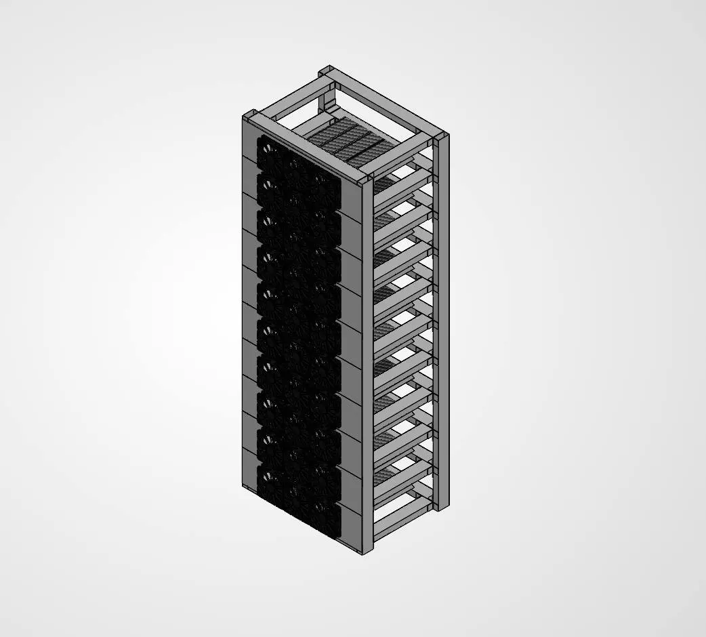
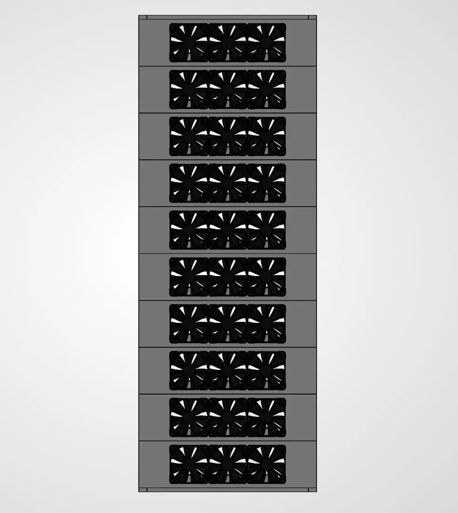
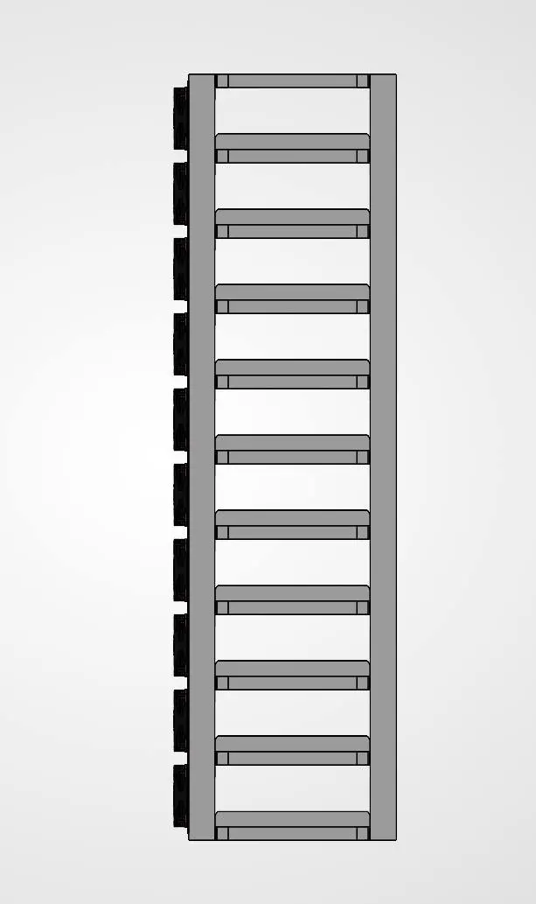
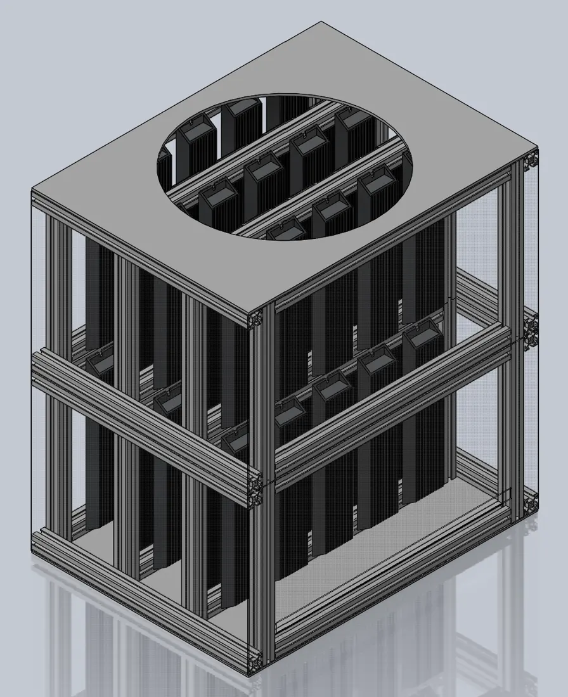
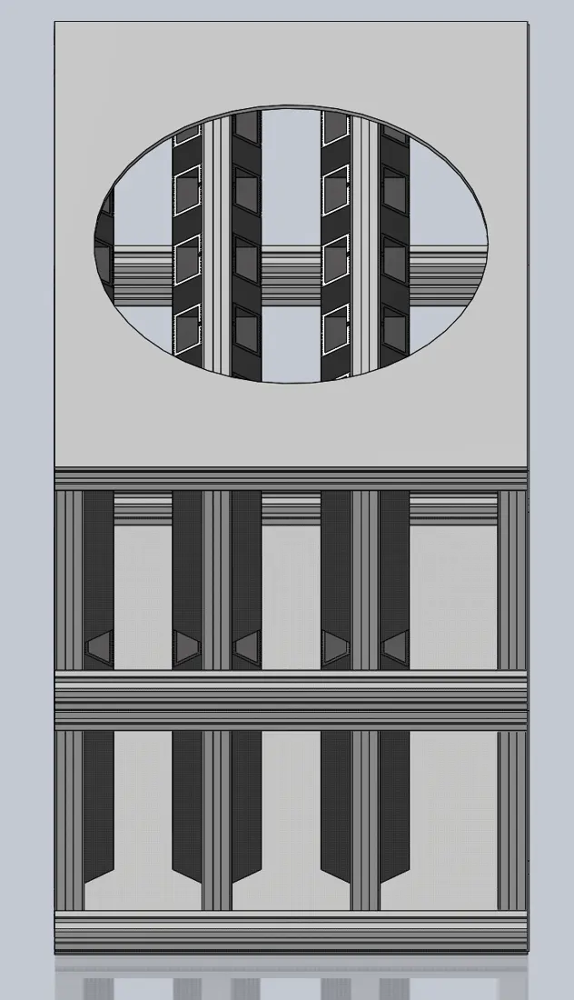
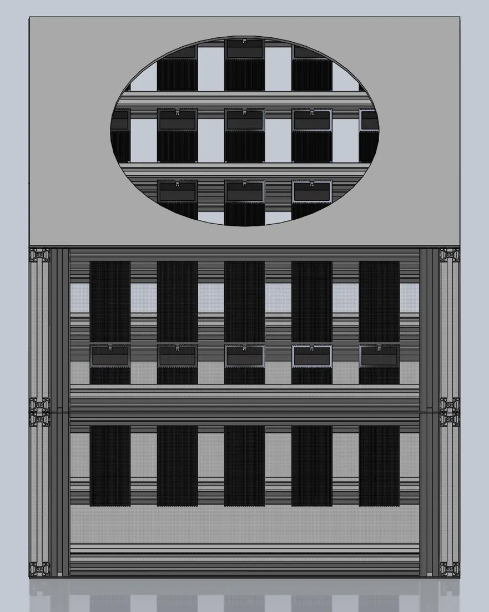
5. Testing
5.1 Epoxy Bonding Test
To justify the proposed epoxy bonding concept and validate its suitability for the dynamometer frame, static lap-shear testing was conducted to evaluate two structural adhesives available in the workshop: 3M DP490 and EPICOTE 3175.
Two tests will be conducted to evaluate the performance of the adhesive:
1. Static Lap-Shear Test (ISO 4587): To determine the maximum load and apparent shear strength
of the adhesive joint under static tensile loading.
2. Fatigue Lap-Shear Test (ISO 9664): To evaluate the fatigue resistance of the adhesive joint under
repeated cyclic shear loading and determine the relationship between applied stress amplitude
and the number of cycles to failure (S-N Curve).The results of the test are:
Breaking Force (kN) Shear stress (MPa)
Test 1 0.9524 3.048
Test 2 1.1474 3.672
Test 3 0.5408 1.731
Average 0.8802 2.817
Table ?: Static tensile test Results for EPICOTE 3175Breaking Force (kN) Shear stress (MPa)
Test 1 5.2919 16.934
Test 2 4.4075 14.104
Test 3 4.214 13.485
Average 4.6378 14.841
Table ?: Static tensile test Results for 3M DP490Based on the experimental results, 3M DP490 achieved a significantly higher average lap-shear strength of 14.841 MPa compared to EPICOTE 3175 at 2.817 MPa. Therefore, 3M DP490 was selected as the structural adhesive for the dynamometer frame. Experimental Procedure, preparation and calculation can be found in Appendix AAA.
As joints are often critical points of failure in truss frames, further calculations were carried out to compare the strength of the bonded joints against that of the Aluminium 6061-T6 hollow beams. First, the maximum force corresponding to the aluminium beam's tensile yield strength was determined. Then, the maximum shear force at each bonded joint was calculated by multiplying the bonded contact area by the obtained shear strength of 3M DP490.
The objective of this comparison was to demonstrate that the epoxy-bonded joints could achieve a strength equal to, or greater than that of the aluminium beams. If the calculated maximum shear force of the bonded joint exceeds the beam's tensile yield capacity, the joint would be expected to withstand a greater load than the beam under assumed loading conditions, supporting the suitability of epoxy bonding for the dynamometer frame.
Figure ?: Verified Tensile and Peel Forces at Joints
For calculation derivations, refer to appendix I.
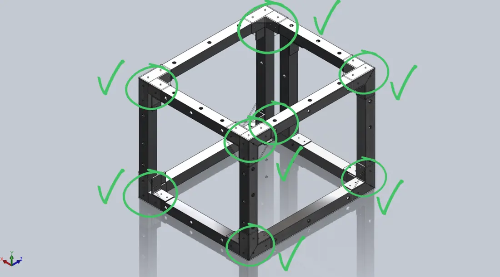
6. Finite Element Analysis
6.1 Static Structural Simulation
Static structural simulations were conducted to evaluate the dynamometer's ability to withstand the stresses generated by the maximum applied torque of 440 Nm and the weight of the vehicle.
Due to the complexity of the system and the large number of components, the dynamometer was divided into several subsystems, as shown in Figure XX. This approach allows each subsystem to be analysed individually, making it easier to identify and resolve potential issues before integrating them into the complete system for final structural analysis.
Figure X: Simulation flow for subsystems
6.1 Problems Faced
Due to the complexity and varying dimensions of the components, three types of finite element models were utilised: beam (1D), shell (2D), and solid (3D) elements. Using 3D solid elements for the entire assembly would significantly increase the number of elements and nodes, resulting in excessive computational demands that exceed the available memory and processing capabilities of our computer.
However, integrating different element types presents challenges, particularly when establishing connections between beam and shell elements. As shown in Figure XX, the beam centreline is located 15.875 mm away from the shell surface. This separation makes conventional contact definitions challenging, as the beam and shell do not share coincident geometry.
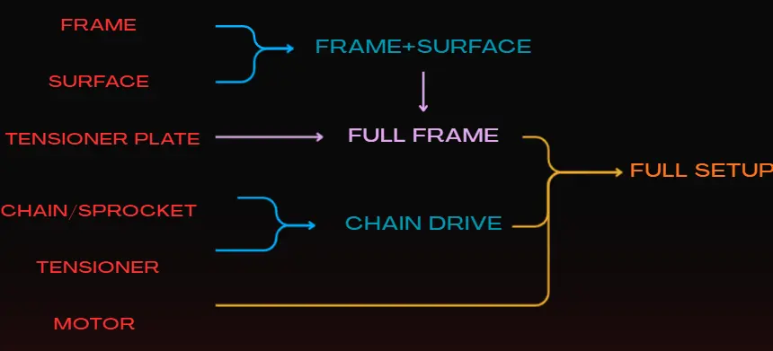
To overcome this limitation, split lines were created on the shell surfaces at the beam attachment locations. Fixed joint connections were then established between the split edges and the corresponding beam elements, allowing loads and moments to be transferred between the two element types.
Figure X: Surface and Beam mesh connection.
A significant amount of time was dedicated to preparing and simulating the chain-drive assembly due to its complexity. The chain had to be accurately modelled in CAD, with each individual link positioned and mated to the adjacent links. The chain was then assembled around the sprockets, ensuring proper engagement with the sprocket teeth while ensuring no geometric interference between components. This made the CAD preparation process tedious and time-consuming.
Furthermore, in ANSYS Mechanical, contact regions had to be manually defined between adjacent chain links, as well as between the chain and both the large and small sprockets. As shown in Figure XX, the chain assembly alone required a substantial number of contact definitions, further increasing the complexity of the simulation.
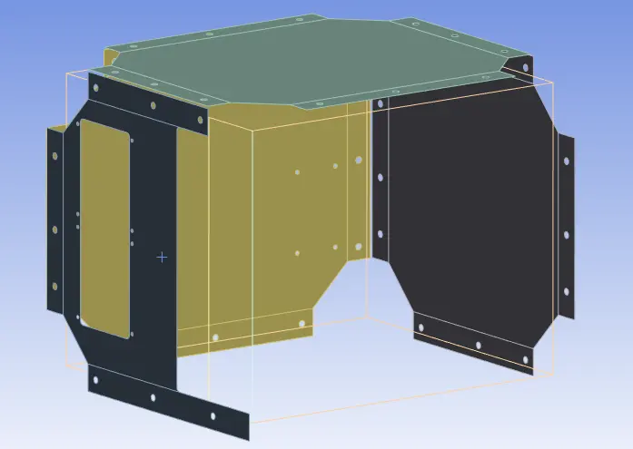
Figure X:Chain assembly connections.
Another major challenge was the limited availability of online references and guidance specifically for static structural simulations of chain-drive systems. As a result, extensive trial and error was required to identify suitable ANSYS contact formulations, boundary conditions and analysis settings. Each simulation took approximately two hours to complete, meaning that every unsuccessful attempt required further troubleshooting, adjustments and another lengthy simulation. This iterative process significantly increased the time required to develop a stable and convergent simulation model.
In addition, high stress concentrations were observed at the interfaces between adjacent chain links, as shown in Figure XX. Further investigation suggested that these unusually high stress values were caused by insufficient mesh refinement and geometric penetration at the contact interfaces, rather than solely by the actual structural loading as seen in figure XX. However, further mesh refinement was restricted by the available computational processing power and memory.
As the primary objective of this simulation was to evaluate the structural strength of the overall dynamometer assembly, emphasis was placed on ensuring that the chain could transmit reaction forces to the surrounding components for subsequent stress analysis. Furthermore, the same chain is used by the FSAE race car under comparable operating conditions, providing some confidence in its suitability.
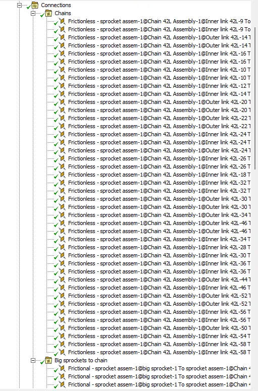
Figure X: Chain simulation results
Figure X: Investigation on geometric penetration of the chain
6.2 Subsystem Simulation Results
6.2.1 Frame and Surface Subsystem
Figure XX illustrates the loading and boundary conditions applied to the frame and beam subsystem, where an arbitrary force was applied to the top plate while the bottom beams were fixed. The simulation results demonstrate successful load transfer between the shell and beam elements, with stresses distributed throughout the structure. Relatively low stresses were observed in the unloaded plates, while the beams carried the majority of the structural loads, as intended by the design.
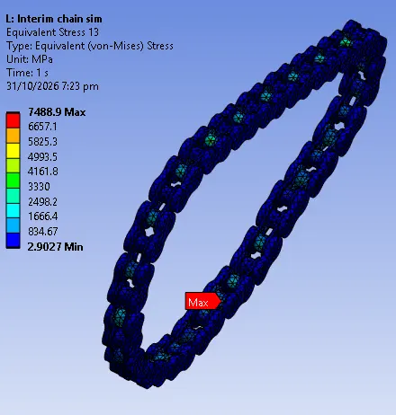
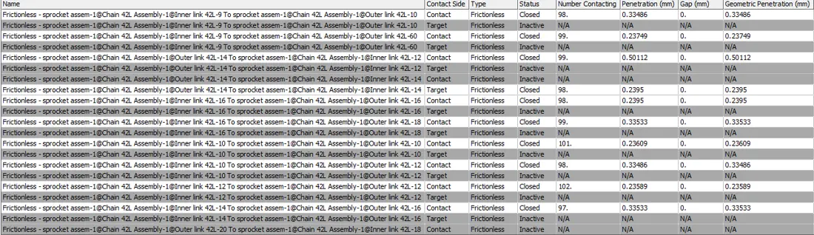
Figure X: Frame and Surface Subsystem setup
Figure X: Simulation results for Frame and Surface Subsystem
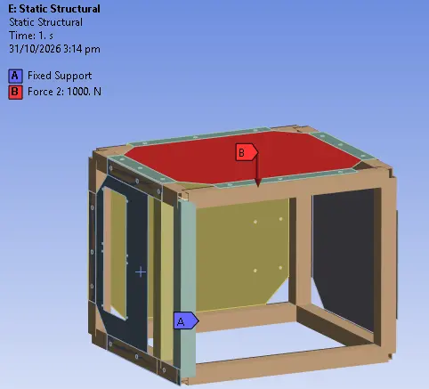
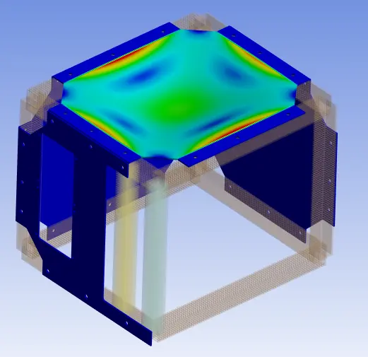
6.2.2 Chain drive Subsystem
For the chain-drive subsystem shown in figure XX, the maximum torque of 440 Nm was applied at the hub mount (B), while fixed supports were applied at the two mounting locations (A) to represent their connections to the beam frame and allow reaction forces to be transferred. A cylindrical support was also applied to the sprocket (C) to restrict both radial movement and rotation to represent the drivetrain at a particular instant under static loading.
Figure X: Chain drive Subsystem setup
The following figure XX to XX shows the simulation results of the individual components, all of which has high factors of safety, indicating that the selected materials and component designs are suitable for the applied static loading conditions.
Figure X: Simulation results of a tensioner plate
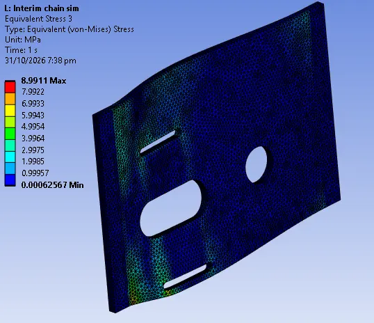
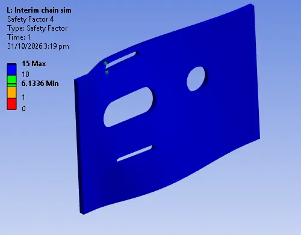
Figure X: Simulation results of a shaft
Figure X: Simulation results of a tensioner
Figure X: Simulation results of a hub mount
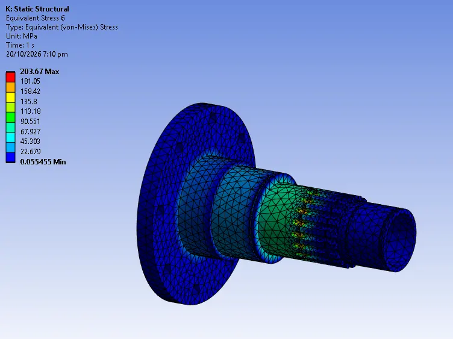
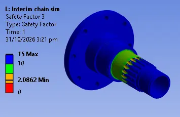
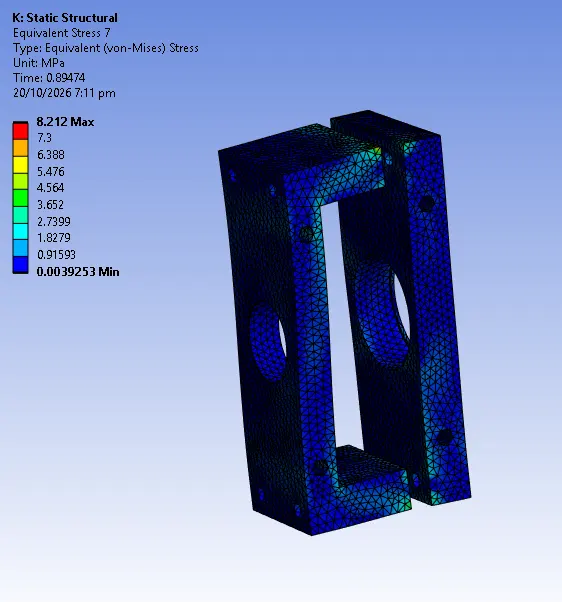
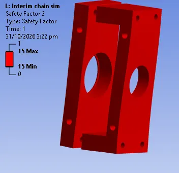
Figure X: Simulation results of a sprocket bracket
Figure X: Deformation of the tensioner plate and tensioner.
6.3 Future Simulation work
Ultimately, the final static structural simulation will integrate all mechanical components of the dynamometer into a complete assembly. Fixed supports will be applied at the four corners of the bottom frame, where the caster wheels will be mounted. A maximum torque of 440 Nm will be applied at the hub, together with a downward force of approximately 490.5 N to represent the vehicle's weight of 50 kg. Figure XX illustrates the preliminary assembly of the complete dynamometer system.
Figure X: Expected setup of full system.
The simulation results will be used to evaluate the overall structural strength and rigidity of the dynamometer by analysing the stress distribution, deformation and factors of safety under the specified loading conditions.
Additionally, thermal and airflow simulations of the braking resistor system will be conducted in the following semester to evaluate its heat dissipation and cooling requirements, supporting the final selection and design of the electrical system.
7. Project Plan
For the following semester, the main objective will be to complete the static structural simulation to validate our design and finalise the electrical assembly based on heat flow simulation results.
Once the design has been validated, we will proceed with the fabrication and assembly of the dynamometer, followed by structural and fixed-load testing to verify its performance.
Finally, we will complete the project documentation and conclude Phases 1 and 2 of the dynamometer development.
Figure X: Gantt Chart for semester 2
8. Conclusion
Throughout this semester, we have gained a better understanding of the problem statement and stakeholder requirements, allowing us to establish clear project objectives.
Taking into account the project constraints, we developed and evaluated different concepts before selecting the most suitable solutions for our dynamometer.
We then proceeded with the detailed design and conducted a series of tests and simulations to validate our design decisions.
Despite the challenges encountered, we managed to address the issues and remain on track with our project timeline.
Appendix A - EMRAX Specification
Appendix B - Dynapack DAQ53 Quotation Prices
Appendix C - Chain Drive Calculations
The centre distance of the chain drive was selected with the objective of achieving a compact dynamometer assembly while maintaining sufficient clearance between the two sprockets.
A 520 chain, with a pitch of
𝑃 = 15. 875𝑚𝑚
was selected. The driver and driven sprockets have 28 and 11 teeth, respectively:
𝑍1 = 28, 𝑍2 = 11
The outer radii of the two sprockets are measured to be:
𝑅1 = 75. 2𝑚𝑚, 𝑅2 = 37. 5𝑚𝑚
Therefore, the theoretical minimum centre distance required to prevent physical interference between the sprockets is:
𝐶 min = 𝑅1 + 𝑅2
Therefore,
𝐶 min = 112. 7𝑚𝑚Since a compact drivetrain was desired, this minimum value was initially used as the contemplated centre distance.
Using the Renold chain-length equation,
Substituting the values in gives,
11−28 2 15.875
𝐿=
2(112.7)
15.875
+
28+11
2
+ ( 2π ) 112.7
= 34.73 pitchesThis gives us the minimum number of chain links that we will use. Additionally, a roller chain must contain a whole number of pitches, and Renold recommends the use of an even number of pitches to avoid the use of a cranked link. Furthermore, for optimum wear life, Renold states that it is recommended that centre distance between two sprockets should be within 30-50 times the chain pitch. Due to structural constraints of the components, we have identified the number of chain links to be L = 42 pitches.
Using Renold's centre-distance equation,
Gives,
15.875 ⎡ 2 π 2⎤
𝐶= 8 ⎢2(42) − 11 − 28 + [2(42) − 11 − 28] − 3.88 (11 − 28) ⎥ ⎣ ⎦ = 173.27mm
Thus, a 42-pitch chain and centre distance of 173.27 mm were adopted for the final design, providing adequate sprocket clearance while maintaining a relatively compact drivetrain layout.
Appendix D - Cooling Specification and Component
Selection EMRAX 228 Cooling Requirements
Pump Selection Radiator Selection
Appendix E - Payback Period Analysis for Power bank
Payback Period Analysis for Battery Energy Storage
Taking the two extreme operating conditions of the FSAE vehicle and accounting for the dynamometer's gear ratio of 2.5:1, the EMRAX 228 will operate at either 176 Nm at 4062 RPM or 132 Nm at 5417 RPM. Both conditions result in approximately the same mechanical power.
Mechanical power:
𝑃𝑜𝑤𝑒𝑟 = 𝑇𝑜𝑟𝑞𝑢𝑒 𝑥 ⍵ = 176 𝑋 2𝜋(4062)/60 = 74. 9𝑘𝑊
The FSAE team requires the dynamometer to operate for 15 minutes per week. Assuming continuous full-load operation throughout each test, the annual energy generated is:
Energy (per test) = 15/60 x 74.9 = 18.7kWh Energy (annual) = 18.7 x 52 = 973.7kWh/year
Based on the Singapore regulated electricity tariff of S$0.3116/kWh (including GST) for October–December 2026, and assuming 100% energy recovery efficiency, the maximum annual electricity savings are: Payback = 973.7 x 0.3116 = $303.4/year
Battery Selection
The battery must accommodate approximately 75 kW of charging power and 18.7 kWh of energy per test. Therefore, An industrial high-power lithium iron phosphate (LiFePO₄) battery energy storage system is considered due to its ability to support high charging rates with appropriate battery management and thermal protection. A commercial 50kWh/100kW BESS is sold by at US$8000-10600.
For this preliminary analysis, we take an : $10200SGD
Payback duration would be $10200 / $303.4 = 33.6 years
The estimated payback period is approximately 34 years, even under the ideal assumption of 100% energy recovery. In practice, the payback period would be longer due to energy conversion losses, additional power electronics, maintenance and battery degradation. Hence, battery energy storage is not economically justified for the expected operating frequency of the dynamometer.
Appendix F — Payback Period Analysis for Regenerative
Power Taking the mechanical power calculated in Appendix D of 74.9 kW and the FSAE team's requirement of 15 minutes of operation per week, the annual energy generated is approximately 973.7 kWh/year.
Assuming 100% energy recovery efficiency and an electricity selling price of S$0.2581/kWh, the maximum annual revenue from exporting electricity to Singapore's power grid is:
Payback revenue = 973.7 x 0.2581 = $251.31
Grid-Tied Inverter Selection
To return the generated electricity to the power grid, a grid-tied inverter is required to convert the rectified DC voltage into grid-compatible AC electricity. A 100 kW Huawei SUN2000-100KTL-M1 three-phase grid-tied inverter was considered, with a listed price of €5,625.00.
For this preliminary analysis, we take an : ≃ $8000SGD
Payback duration would be $8000 / $251.31 = 31.8 years
The estimated payback period is approximately 32 years , even under the ideal assumption of 100% energy recovery. In practice, the payback period would be longer due to additional power conversion equipment, grid connection and protection requirements, installation costs and energy losses. In addition regulatory approval is required to export electricity generated by the dynamometer to Singapore's power grid. The FSAE team had previously applied for approval to implement a regenerative power system, but the application was unsuccessful. Therefore this option is ruled out.
Appendix G — Cost Analysis for Power Resistor
Dissipation The power resistor concept dissipates the electrical energy generated by the dynamometer as heat. Based on the mechanical power calculated in Appendix A, the dynamometer operates at approximately 74.9 kW under full-load conditions.
The selected resistor model is the RXLG-1kW aluminium-housed braking resistor, rated at 1 kW per unit. A total of 100 resistors are considered, with 50 resistors allocated to each wheel, providing a combined nominal dissipation capacity of 100 kW. However, as the scope of this project is limited to building a one side of the dynamometer, only 50 resistors are required, providing a nominal dissipation capacity of 50 kW.
A commercial RXLG-1kW resistor is listed at SGD16.50 per unit. The total cost needed for this project would be $16.50 x 50 = $825. Therefore, making this the most viable option.
Appendix H —Bearing Life Analysis
The Formula SAE (FSAE) race car has an estimated total mass of 200 kg. Assuming that the vehicle weight is equally distributed across all four wheels, the equivalent mass supported by each wheel can be calculated as:
𝑊𝑒𝑖𝑔ℎ𝑡 𝑑𝑖𝑠𝑡𝑟𝑖𝑏𝑢𝑡𝑖𝑜𝑛 𝑜𝑛 𝑎 𝑤ℎ𝑒𝑒𝑙 = 200/4 = 50 𝑘𝑔 ≈ 500𝑁
For the purpose of this analysis, an equivalent radial load of 500 N is assumed, with axial loading considered negligible. This provides a simplified basis for comparing the theoretical fatigue life of the EMRAX 228 motor bearings against the selected dynamometer bearings.
As the dynamometer operates at relatively high rotational speeds, bearings suitable for high-speed applications were prioritised. However, the selected thin-section bearings have lower basic dynamic load ratings compared to the EMRAX motor bearings. To compensate for this, two bearings are used at each bearing location to distribute the applied load. Assuming equal load distribution between the two bearings, the radial load experienced by each bearing is:
𝐸𝑎𝑐ℎ 𝑏𝑒𝑎𝑟𝑖𝑛𝑔 𝑙𝑜𝑎𝑑 = 500/2 = 250𝑁
Two bearing locations are considered in the analysis:
Assuming the worst case condition of the FSAE car driving at full load, the car’s Emrax peak at 6500RPM.
1) Bearing A (NSK 6910VVCM): Located at the hub-side shaft where RPM is determined by the
selection of the FSAE car dive ratio. The maximum RPM is when a gear ratio of 3:1 is selected.𝑅𝑃𝑀 𝑎𝑡 𝑏𝑒𝑎𝑟𝑖𝑛𝑔 𝐴 = 6500/3 = 2167𝑅𝑃𝑀
2) Bearing B (NSK 6907V): Located on the dynamometer shaft after the chain-and-sprocket drive
transmission of 2.5:1.𝑅𝑃𝑀 𝑎𝑡 𝑏𝑒𝑎𝑟𝑖𝑛𝑔 𝐵 = 2167 𝑋 2. 5 = 5417𝑅𝑃𝑀
The theoretical fatigue life of each bearing is subsequently calculated and compared against the EMRAX 228 motor bearing benchmark to evaluate its suitability for the dynamometer. The table XX shows the parameters for our calculation.
Bearings: Dyno’s Emrax 228 Bearing A NSK 6910VVCM Bearing B NSK 6907V
RPM 5417 2167 5417
Radial Force 500N 250N 250N
In the Emrax there are 2 bearings, FAG3206 and FAG6206. We will calculate the Life expectancy using ISO 281 bearing life equation and take the lowest one for the benchmark.
EMRAX FAG 6206 :
6
10 20800 3
𝐶𝑟 = 20. 8𝑘𝑁 𝐿₁₀ = 60(5417)
( 500 ) = 221500 𝐻𝑜𝑢𝑟𝑠EMRAX FAG 3206:
6
10 31000 3
𝐶𝑟 = 31𝑘𝑁 𝐿₁₀ = 60(5417)
( 500 ) = 733200 𝐻𝑜𝑢𝑟𝑠Bearing A NSK 6910VVCM:
6
10 16000 3
𝐶𝑟 = 16𝑘𝑁 𝐿₁₀ = 60(2167)
( 250 ) = 2016200 𝐻𝑜𝑢𝑟𝑠Bearing B NSK 6907V:
6
10 11600 3
𝐶𝑟 = 11. 6𝑘𝑁 𝐿₁₀ = 60(5417)
( 250 ) = 307300 𝐻𝑜𝑢𝑟𝑠Comparison Table Life Expectancy (Hours)
EMRAX FAG 6206 221,500 h
NSK 6910VVCM 2,016,200 h
NSK 6907V 307,300 h
Based on the bearing life calculations, the EMRAX 228 FAG 6206 bearing was used as the benchmark, as it has the lowest theoretical fatigue life among the motor's internal bearings. Under the assumed operating conditions, both selected dynamometer bearings demonstrated a longer theoretical fatigue life than the benchmark. Therefore, the NSK 6910VVCM and NSK 6907V bearings were concluded to be suitable for the dynamometer based on the preliminary bearing life analysis.
Appendix I - Epoxy Bonding Test
Preparation of Specimen
The specimens will be prepared using a single-lap-joint configuration based on ISO 4587:2003.
Parameters Dimensions(mm)
Length of strip 100±0.25
Width of strip 25
Thickness of strip 1.6
Length of Overlap 12.5
Adhesive thickness 0.2
Number of Specimen
Static Test Fatigue Test
3 Sets Amplitude 1 Amplitude 2 Amplitude 3
2 set each
Total: 18 strips
Surface Preparation
The bonding surfaces will be prepared consistently to minimise variations in adhesive performance caused by surface contamination or irregularities.
The following procedure was adopted:
1. wq
Adhesive preparation and curing
Epicote 3175 consists of two components, Part A and Part B, which were mixed at a ratio of 1:1 prior to application. A 0.2 mm shim was used to control the adhesive bond-line thickness and ensure consistency across the specimens.
The mixed epoxy was applied uniformly onto the designated overlap area of one metallic strip before being joined to the second strip to form a single-lap joint. G-clamps were then used to apply compressive pressure to the bonded assembly, maintaining contact between the adherends and the required adhesive thickness during curing.
The specimens were subsequently left to cure for seven days before undergoing static and fatigue lap-shear testing.
Experimental Procedure
The machine used in both static and fatigue is the instron 8501.
Static
1. Mount the specimen symmetrically in the tensile testing machine.
2. Position each grip approximately 50 ± 1 mm from the nearest edge of the bonded overlap, as
specified in ISO 4587.
3. Ensure the specimen is properly aligned with the loading direction. Suitable shims may be used
to minimise unintended bending.
4. Apply tensile loading at a constant test speed selected such that the average specimen fails
within 65 ± 20 seconds.
5. Continue loading until failure occurs.
6. Record the maximum force sustained by the specimen, (F_{\max}).
7. Inspect and photograph the failed specimen. Record whether failure occurred within the
adhesive, at the adhesive-metal interface, or within the metallic adherend.
8. Repeat the procedure for all 3 specimens.From the data, we determined the shear stress from the 3 samples:
Shear stress = Fmax / Area
The average static lap-shear strength is: ⅓ (τ1 + τ2 + τ3)
Fatigue
The fatigue lap-shear test will evaluate the resistance of the adhesive joint to repeated tensile-shear loading.
The mean stress was determined by following the ISO standard recommendation of 0.35x τstatic.
τmean = 0.35(τstatic)
Selection of 3 different stress amplitude to maintain tensile-tensile cyclic conditions. According to ISO 9664, preliminary fatigue tests may be required to identify suitable stress amplitudes that produce failure between (10^4) and (10^6) cycles.
1. Mount a new specimen in the fatigue testing machine using suitable aligned grips.
2. Configure the machine for sinusoidal load-controlled fatigue testing.
3. Set the mean force, (F_m), based on the selected mean stress.
4. Set the force amplitude, (F_a), corresponding to the selected stress amplitude.
5. Set the testing frequency to 30 Hz, subject to machine capability and confirmation that excessive
specimen heating does not occur.6. Apply the mean load and gradually establish the required cyclic loading conditions.
7. Continue cyclic loading until the specimen fails or reaches the predetermined run-out limit of
(10^6) cycles.
8. Record the number of cycles to failure, (N), together with the failure mode.
9. For specimens surviving (10^6) cycles, record the result as a run-out rather than a failure.
10.Repeat the test three specimens at each selected stress amplitude.
11.Repeat the procedure for the remaining stress amplitudes.From the data, the relationship between cyclic stress amplitude and number of cycles to failure will be determined through the construction of a stress-life (S-N) curve.
Appendix J - Shear Forces at Joints
Aluminium 6061-T6:
Given:
● Cross-sectional area, A = 235.78 mm²
● Tensile yield strength, σᵧ = 276 MPaThe maximum force corresponding to tensile yielding is:
𝐹𝐴𝑙 = σ𝑦𝐴𝐴𝑙 = (276MPa × 235.78mm²) = 65,075.28 N
3M DP490:
Taking a specific joint as an example,
Given:
● Experimental shear strength, τ = 14.841 MPa = 14.841 N/mm²
● Bonded area 1 = 2,035 mm²
● Bonded area 2 = 2,540 mm²
● Bonded area 3 = 1,587.5 mm² (2 surfaces)𝐴𝑡𝑜𝑡𝑎𝑙 = A₁ + A₂ + 2A₃
= 2035 + 2540 + 2(1587.5)
= 7,750 mm²
𝐹𝑒𝑝𝑜𝑥𝑦 = τ × 𝐴𝑡𝑜𝑡𝑎𝑙
= 14.841 × 7,750
= 115,017.75 N
The estimated epoxy shear capacity is approximately 76.7% greater than the aluminium beam's tensile yield capacity. This calculation is then repeated for the other joints around the truss as well.